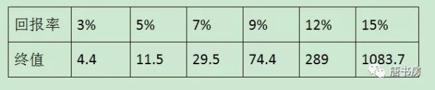
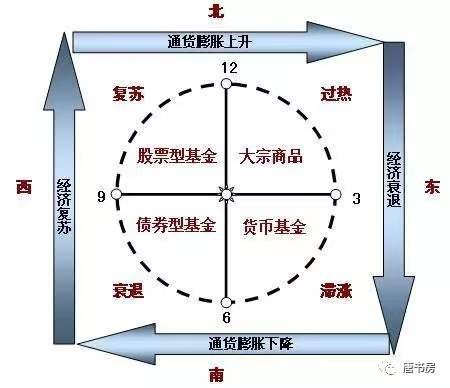
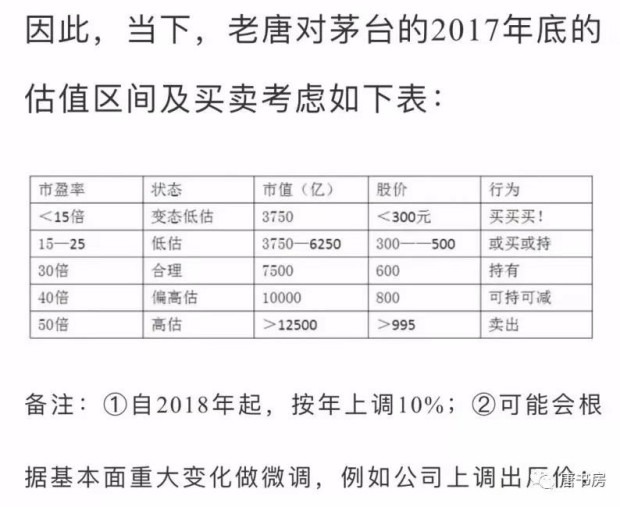
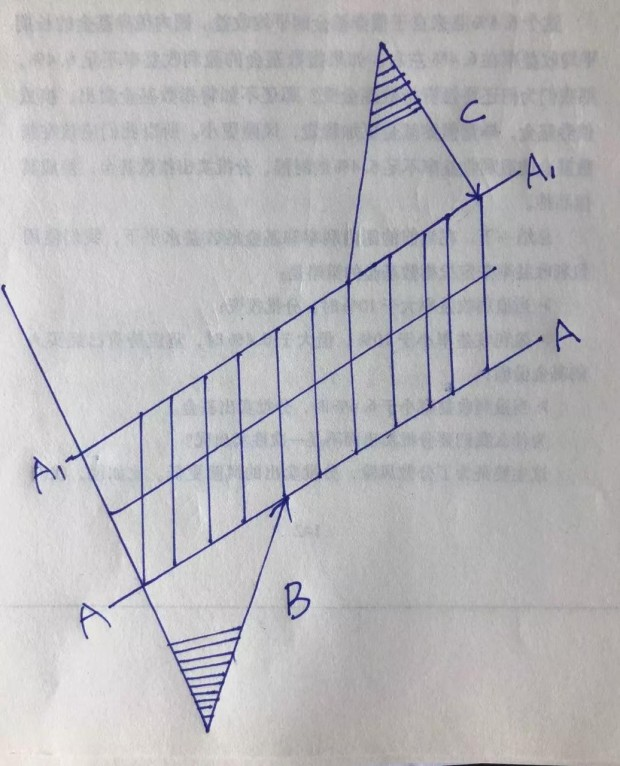
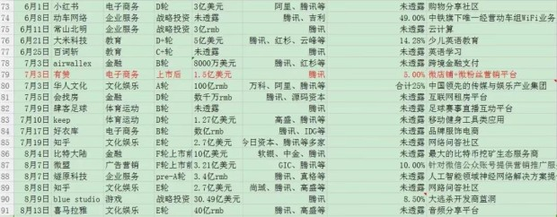
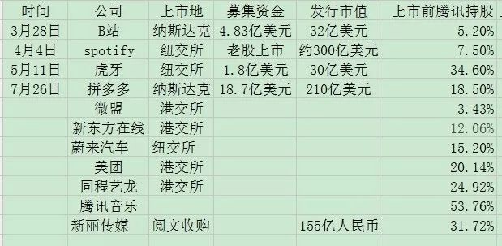
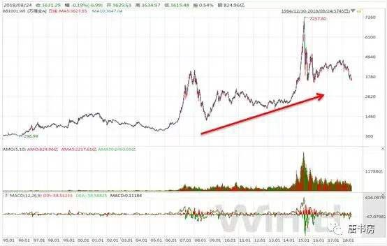
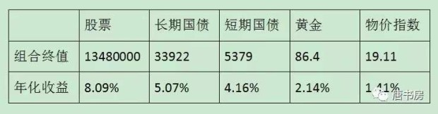
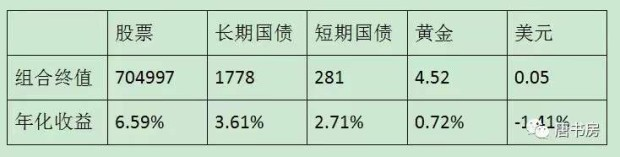
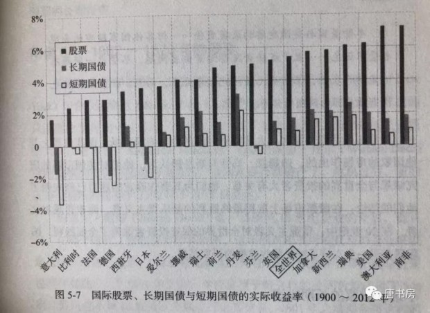

学习投资理念就好比阅读《游泳技术里的力学原理》，研究具体企业则类似于下水扑腾。明白力学原理，对游泳有帮助没有？肯定有。但如果只是将力学原理倒背如流，却不肯下水去扑腾，恐怕永远也学不会游泳。读些理念文章，会给自己一种错觉，似乎自己很努力，学到了很多东西，然而如果发现「懂了很多价值投资的道理，依然没有变成账户上的盈利」，其主要原因可能就是念多了力学原理，缺少足够量的下水练习——阅读财报，研究企业。
价值投资的理念很简单，无外乎八个字：安全边际、市场先生。安全边际是说要在市价远低于企业价值的时候买入；市场先生是说要利用市场的周期性癫狂获利，而不是被这种癫狂所左右。
那么，究竟是什么困难，导致聪明人殚精竭虑却连最简单最弱智的办法也跑不赢呢？老唐个人看法，难点主要有三：一想时刻有赚；二想赚到最多；三想证明强大。
时刻有赚，主要体现就是期望自己抄到最底，找到市场先生癫狂的极限值，一旦买入，股价再也不要跌过自己的买入成本。这种不切实际的期望，以及偶然猜中带来的所谓厚利，直接后果就是财富经常配置为低盈利能力资产（现金或类现金资产），表面上看名义值似乎没有受损，长远看注定跑输股权收益。
赚到最多，常见形式有①想抄最低，结果变成踏空或追涨（和上一条重合），②想英明逃顶，结果变成踏空或追涨，③不愿意接受“回撤”，想躲开长期上涨中的短期调整；④受不了其他代码上涨的诱惑，在不同的代码间跳来跳去，不仅多交了佣金税费，还经常掉坑里，或者低抛高吸被来回收割；⑤想吃尽短期涨幅，自我麻痹于日内T，结果由于习惯性关注短期波动而过早离开。
证明强大，主要体现形式有：①喜欢找黑马，总觉得投资人人皆知的公司很没劲，最好挖掘一个别人没听说过的代码，才算本事；②最好每一个涨幅靠前的明星公司，自己都有买过，没放过任何市场热点；③不愿意认错。在一支股票上亏了钱，就要盯住它，从它身上赚回来，否则就觉着被它打败了。
瞅瞅自己，有没有上述表现？干掉他们，投资就会变的很简单。
巴菲特曾经说过，如果只能挑一个指标来选股，他会选择净资产收益率（Roe）。净资产收益率=净利润/净资产，通常用归属母公司股东所有净利润和归属母公司股东所有净资产口径。
长期关注唐书房的朋友也知道，老唐同意巴神这个观点，始终选择投资高Roe公司。假如忽略互摸腰包，将所有股东看成一个整体，这个“人”能否赚钱，只能取决于企业能否持续地经营获利。无论是否参与互摸腰包，或者互摸腰包的战果如何，选择站在高Roe企业里，类似在享受补贴的情况下去玩互摸腰包游戏，总比付费互摸结果会好一点点。
但同时老唐也多次表达过，除了金融企业以外的其他企业，账面净资产并没有什么关注价值。并由此对一些拿pb过高来批判诸如茅台、腾讯、海康等企业投资价值的言论，嗤之以鼻。
备注：金融企业除外，是因为金融企业大量持有的主要是金融资产，日常按照监管要求采用盯市制度，即每天都将所持有的金融资产按照市场公允价值计算入账，因此，其账面净资产值是有参考价值的。
那么，既然老唐认为账面净资产关注意义不大，那为何又特别看重以此作为分母的净资产收益率指标呢，这岂非自相矛盾？ 注意，这里涉及到一个对Roe指标的正确运用方法。老唐本文的阐述，或许是全网原创首发，至少我没有看到过任何人有过类似关于Roe指标运用的表述。当然，也有可能是我接触面太窄的原因。
让我先从名气和影响力远超Jack.马和Pony.马的Karl.马说起。德国经济学家Karl.马，生于清嘉庆二十三年，卒于清光绪九年，享年65岁。一生最大的成就是写出了《资本论：政治经济学批判》一套四卷，该书首发于大清同治六年。Karl.马继承并发扬了前辈经济学家大卫.李嘉图在清嘉庆二十二年发表的《经济学及赋税之原理》所阐述的劳动价值论，提出了“价值是凝结在商品中的无差别人类劳动”的观点，并在此基础上建立了剩余价值论，认为资本主要靠剥削劳动者所创造的剩余价值获利。
另一位伟大的经济学家欧文.费雪（1867-1947），在1930年出版了巨著《利息理论》，石破天惊地提出了“凡是可能产生未来收入的资源都是资产。资本就是资产的现值。”该理论的提出，解决了企业亏钱是否意味着员工反过来剥削了老板的经济学难题；解决了同样劳动量的洗碗工作，在纽约和铁岭报酬落差巨大的经济学难题；解决了生产一瓶茅台和一瓶王子劳动量相差无几，售价却有云泥之别的经济学难题；解决了一瓶茅台放几年，增值部分从哪里来的经济学难题……
从此，（部分）世人明白了资本和劳动不是两个阶级的对立关系，只是不同形态资本之间的合作（甚至可以用更进一步的相依为命来形容，打倒其中一个，另一个只会更差而非更好）。金钱可以是资本，劳动力可以是资本，创意可以是资本，容颜可以是资本，巨乳童颜大长腿同样可以是资本……它们都是可能带来未来收入的资源。
既然是合作，一定是意图和你合作的人越多，你的资源价值越高。反之，和你提供同类资本的竞争对手越多，你的资源价值就越低，无论这资源是金钱、劳动力、创意或者巨乳童颜——意图「剥削」你的公司越多，你越有可能获得更好的待遇，而不是相反。同样，导致你待遇降低的人不是雇你的老板，而是资历能力背景和你差不多，却比你萌一丢丢的另一位阶级同志。
当我们明白所有能产生未来收入的资源都是资本时，我们就应该明白，当我们看见一家公司财务报表里用很少的净资产就创造了很高的利润（即Roe很高），它的含义并不是这家公司的资产有什么神奇之处，而是代表它家一定有些什么能带来收入的东西，没有被记录在财务报表上。又或者，反过来，当我们看见一家公司净资产收益率很低时，也并不意味着这家公司资产不争气，而是代表这家公司部分资产的价值，远远低于账本记录的账面值。
举个极端的例子，在北京长安街上设一根收费的杆儿，与在撒哈拉大沙漠设一根收费的杆儿，如果比建设成本或者比「凝结在商品中的无差别人类劳动」，后者可能更多。然而，前者会具有巨高无比的Roe，后者却有着近于零的Roe，原因为何？很明显，是前者账本上没有记录「收费权利」这项价值非常巨大的资产；而后者的账本上忘记记录「愚蠢决策」这笔费用，该投资在完成时，价值已经归零。它带不来收入，只是零资产状态下的正常结果。
因此，净资产收益率这个指标，要倒过来看（查理.芒格旁白：倒过来看，总是倒过来看），是看到高净资产收益率，去想这家公司有些什么资产没有记录在账面上？看到低净资产收益率，去想这家公司的什么资产已经损毁了，却没有从账面上去掉？
在《手把手教你读财报》65页，老唐写到：
当企业甲和企业乙拿着同样的资产，收入和利润却有云泥之别时，我们难免会问：这部分收入是从哪里来的？于是会计学就创造了一个新名词：商誉。
若一家企业的获利能力超过可辨认净资产的正常获利能力，超出的部分，一定是另外一种资产带来的，这个资产就被叫作“商誉”。
商誉是个奇妙且容易被忽略的东西。自创商誉不允许记录在报表上。因而，没有进行过收购的企业，商誉栏目就是0。记录为0，并不意味着没有商誉。它实实在在是企业获得盈利的重要资源，只是会计假装看不见而已。
巴菲特这么评价商誉：“直接和间接的企业分析经验，使我现在特别倾向于那些拥有金额很大的、可持续的经济商誉，却对有形资产需求很少的企业……在通货膨胀时期，经济商誉是一份不断创造丰厚回报的大礼。”股神这是直白地告诉你选股标准，投资者千万别忽略了这句话。
简单粗暴的解释，高Roe指标是指引巴菲特寻找“商誉”的入口。他为什么要去寻找商誉呢？
资本永不眠，资本日夜都在追逐超越市场平均回报率的投资项目。一种获取高额利润的手段，如果只是投入金钱就可以复制，那么它一定会被复制。结果就是对手产生、竞争加剧、利润率降低、Roe缩水。
关于这个问题，还是karl.马在《资本论》里引用的名言来表述，更惊心动魄一些：
资本逃避动乱和纷争，它的本性是胆怯的。这是真的，但还不是全部真理。资本害怕没有利润或利润太少，就像自然界害怕真空一样。
一旦有适当的利润，资本就胆大起来。如果有10%的利润，它就保证到处被使用；有20%的利润，它就活跃起来；有50%的利润，它就铤而走险；为了100%的利润，它就敢践踏一切人间法律；有300%的利润，它就敢犯任何罪行，甚至冒绞首的危险。——《资本论》第一卷第24章第7节。
所以，归结为一句话，凡是靠金钱可以买到的资源，其获利能力的可持续性是存疑的。所以我们才要找那些不是靠钱可以买来、却能给公司带来收入的独特资源，也就是巴菲特说的经济商誉——注意，和财报里的资产科目“商誉”并不等同。财报上的商誉是溢价收购行为的差价，里面可能是经济商誉的全部或部分，也可能只是愚蠢的全部或部分。
高的Roe，一定代表着某种资产没有被记录在资产负债表里，这就是净资产收益率指标所告诉我们的。而常见的、不在资产负债表里，用金钱也很难买到的资产类型，老唐在书房里写过：
1. 有法律或管制不让其他人提供同样的商品或服务；
2. 有专利/技术或工艺使别人无法提供同样的商品或服务；
3. 有品牌对用户心智的提前占领，导致用户优先信任本公司产品或服务，哪怕竞争对手的产品事实上是一样的；
4. 由于先发优势，用户转用其他公司的产品或服务，很麻烦或代价很高；
5. 同样的产品或服务，本公司有能力做到更低成本；
6. 本公司的产品或服务，每增加一个使用者，都会给新老客户同时增加更大的价值，导致用户不愿离去；
7. 本公司占领了一个狭小的市场，该市场可以使现有参与者小日子美美的，但如果增加一个竞争者，所有新老参与者通通没饭吃，由此，潜在参与者没动力来抢食。
巴菲特说如果只让他选一个指标，他会选择roe。因为roe指标可以指引他快速找到那些可能具有某种经济商誉的企业。那是不是找到以后，就可以直接投资了呢？非也非也，这只是第一道关口，距离做出投资决策，还有很远的距离要走。投资者接下来要思考：
①那些没有被记录在资产负债表上，却能给企业带来收入的资产是什么？
②这种资产未来会消亡、会增长还是会维持不变呢？
③它的存在或者增长，是否需要投入资金去维护。与新增产出相比，投入资金是否具有较高性价比？
这就是老唐心目中认为的Roe指标的正确使用姿势。
不过，使用Roe作为筛选企业的第一关，是在学霸里寻找未来的学霸。它注定有个死结：会错过逆袭为学霸的原学渣。而逆袭才恰恰是公众最津津乐道的传奇。这些“学渣”，可能处于某新领域，前景远大，只是出于某种战略考虑，主动放弃利润，依赖其他来源的资金维持企业的生存和扩张，比较典型的如巴菲特所放过的亚马逊。对此，我暂时也没想出什么好方法，只能被动接受，当它是自己为确定性付出的代价了。
PS：今天315，不知道今晚会不会有上市公司中招？遥想7年前，315晚会曝光双汇，直接杀了三个跌停都没止住。今晚，别忘了端板凳看戏。
上一篇《Roe指标的正确应用》一文里，老唐分享了一个原创观点：Roe只是个路标，是个指示牌，它的作用是指引我们去发现某种没有被记录在资产负债表、却能给公司带来收入的「经济商誉」资产。因此以账面净资产值为基础的pb估值法，价值不大。文章说，Roe指标要倒过来看，看到高净资产收益率，要去思考这家公司有些什么资产没有记录在账面上？看到低净资产收益率，要去思考这家公司的什么资产已经损毁了，却没有从账面上去掉？
倒过来的意思，是首先要从逻辑上假设，由于资本无时无刻的逐利行为，当下所有资产的回报率实际是一致的（否则会导致套利行为发生，直至达到一致或差异小于套利成本），全都是常数N——N可以取值无风险回报率。
让我们列个小学数学方程式阐述它，那就是：
（净资产A+经济商誉G）×N＝净利润＝净资产A×Roe。这个方程里，未知数只有一个G。
这个小学方程式推下来，会得到一个关于未知数G的等式：
G=（Roe/N-1）×A
它表明经济商誉G和Roe之间的一个对应关系：Roe越大，G值越大；Roe越小，G值越小；当Roe＜无风险回报率时，G值为负。
于是，如果无风险回报率为6%，一家净资产收益率为30%的企业甲，它的经济商誉=（30%/6%-1）A=4A；一家净资产收益率为3%的企业乙，它的经济商誉为-0.5A；而一家净资产收益率为-6%的企业丙，它的经济商誉为-2A。由此，我们会发现以pb高低来衡量企业价值，是一件荒谬的事情。同样账本上记录的都是100元净资产，但甲的100元，一年能赚30，而乙的100元一年能赚3元。甲的100元净资产加上400元经济商誉，如果等价于乙的100元净资产加-50元商誉，那才真正是没天理呢！
事实上，如果我们能够理解pb选股的祖师爷本杰明.格雷厄姆所生存的时代背景，也就能够理解这种方法的局限了。格雷厄姆投资思想成型于美国大萧条期间，股市在三年时间里从峰值381点跌至42点，跌幅近90%。GDP下降超过50%，失业率超过25%，大量企业和农场倒闭，最严重的州，有五分之四的人失业…… 那是一个朝不保夕的时代，人们的目标是活着，每天都有几百万人口靠施粥棚的粥生存，所有的“消费者”都在尽最大可能寻求最便宜的商品，几乎没有人愿意为商品或者服务支付溢价，没有人敢于乐观的展望未来。由于消费者只寻求最低成本的商品和服务，不愿支付任何溢价，企业哪里还有“经济商誉”这种东西呢？G=0。
G=0，按照G=（Roe/N-1）A的公式，意味着净资产收益率Roe=无风险常数N。既然是盈利能力相同的资产，你不给个折扣，我为什么要和你交换？这种不看发展的存量交换，自然是你多了就是我少了，我多了就是你少了，此时讨价还价（买得好）就是第一位的。这就是我认为的格雷厄姆选择一篮子市值低于净营运资本2/3的股票投资思想的源头。坚持选择一篮子市值低于净营运资本的2/3的企业，只要其中有部分熬过大萧条，市值恢复到重置成本，其他企业就是破产清算，固定资产全部归零，净营运资本的2/3位置买入，也能基本保证不会亏钱。总体下来，投资组合依然能够获利。
事实上，这种思想到今天依然有用，不过常常被使用者用偏。祖师爷是用低pb筛选建立一篮子股票组合（格老推荐多行业低pb股票组合，个股20~30只），从回归重置成本的概率上获胜。今天很多刻舟求剑的模仿者，找到一只或两只低pb的股票买入，然后抱怨它“这么低pb，为什么就不涨呢？隔壁那么高pb的，股价一个劲儿的上涨，市场太无效了……”
市场并不总是无效，也并不总是有效。无效的时候，让我们发现价值，有效的时候，让我们兑现价值。还有比这更美妙的事儿吗？
但是，老唐要表述的意思是，低pb股票不涨，确实可能是市场无效，但也很可能只是自己因为自己持有的净资产盈利能力太低，其中包含了负的经济商誉。在没有对企业进行深度了解之前，用一句「市场无效」解释给自己，很可能是帮着市场一起坑自己的钱财。
然而，即便针对包含经济商誉在内的盈利能力去估值，同样有新问题。比如中国平安刚刚发布的2017年度财报，归属股东所有的净利润超过890亿，同比增长约43%，增长数据完美。即便刨过其中平安好医生Pro-IPO轮4亿美元融资带来的约108亿重组交易利润（见《手把手教你读财报》91页阐述），当年净利润也超过780亿。
890亿人民币净利润的中国平安，市值约1.7万亿港币，对应约15倍市盈率。而另一家知名公司腾讯控股，2017年净利润估计比它低约1/4（腾讯今晚发布财报，估计净利润约在680±20亿范围），市值4.5万亿，对应超过50倍市盈率。市盈率是非常直观的估值指标，它表达的意思是该公司每赚1元的资产，你愿意以多少钱收购。15倍市盈率代表着能赚1元钱利润的资产，市场的出价是15元。而50倍市盈率的含义，则是公司赚1元钱净利润的资产，市价可以卖到50元——这里说的资产，都已包含了经济商誉。
两家公司都是行业巨无霸，公司总部都在深圳，都是知名度非常高的企业，在同一家交易所上市，甚至两家公司的掌舵人都姓马，市场却给了两家公司天差地别的估值水平，假如我们不用一句简单的「市场错了」来打发自己，还能用什么原因去解释针对同样的1元盈利，市场给出的15和50的巨大估值差异呢？
老唐之前的文章里写过，市盈率估值法是一个简单明快的手段，是未来现金流折现法的极端简化版本，但它的使用有三个重要前提：净利润是否为真？是否能持续？持续是否依赖增量资本投入？只有在这三个问题的答案分别为“是是否”的时候，市盈率简化估值大法才能放心使用，否则就可能掉进坑里而不自知。
平安和腾讯的市盈率差异，就集中在三大重要前提的第一项“净利润是否为真”上。一般我们说确认利润是否为真，通常有两种含义，一是报表造假，二是净利润含金量低。造假的含义都知道，而利润含金量低，是说公司赚取的利润，主要体现为不够可靠的应收账款（欠条）、或者主要靠关联交易作出来的、或者是依赖于估值重估。
平安不同，平安不属于上述两种情况的任何一种，说它是否为真，老唐不是想说平安造假或净利润含金量低，而是说“中国平安的利润很难确认为真。”什么意思呢？简单的说，平安由于其企业属性，账上从来不会缺“钱”，所以无法用现金流紧张不紧张来判断企业是否获得了真金白银的利润。但是，这些源源不断来到账上的“钱”，有多少属于股东，是需要依赖于公司一系列假设前提“计算”的。
主要的假设有“折现率、未来投资收益率、死亡率、发病率、退保率、保单红利及费用等”，这里，任何一个数据的取值有变化，公司年度净利润及归属股东的净资产都会发生巨大的变化——或者正向，或者负向。然而，关于折现率、投资收益率以及死亡率或发病率等数据，有没有一个标准数据来衡量公司取值是否准确严谨呢？没有。全球都没有，而且，只要公司不停业清算，永远都不会有标准值出来。所有的投资人都在基于一个永远不知道正确或错误的假设买卖。
在不知道利润是否为真的情况下，投资者要么选择远离，要么选择对净利润大打折扣去保守考虑。这就是我认为的理性投资人的态度，也是保险企业相对估值偏低的原因。当然，“炒”股的不需要考虑这些。在炒者眼中，股票不过是一个买来以后准备卖给别人的代码而已，关键问题只有一个：“买了以后会不会有傻子出高价从我手中接走”。
在老唐看来，只要不是将一张张纸钞装在钱包里，我们就实际上处于满仓状态。差异只是在活期存款、定期存款、货币基金、各种债权、各种股权、房产、贵金属、金融衍生品、保险、外汇……等不同投资对象之间做的不同比例的选择。它是个持续一生的动态过程，不管愿意与否，这个状态会一直持续到我们的人生终结。
区别在于，由于每个人认知的不同，每个时点上配置品种不同，这些小小的收益差叠加长达数十年的时间，最终不同人的人生财富值差异巨大——绝大多数人意识不到这个差异究竟有多大：假设人生有50年的有效投资时间（25岁至75岁），1个单位的本金，在不同回报率下的终值如下表：

老唐强烈建议书房的朋友们从今天开始，坚决抛弃“进入股市是开始投资，退出股市是停止投资”的错误思想，牢记我们从拥有第一笔“钱”的时候，就已经开始了投资，且365×24不休息，一直持续到离开人世才算罢手。
一个人，只要不是含着金钥匙出生的，财富最初总是靠出售体力或智力劳动换来，并在满足我们的消费需求之后，通过配置在不同的资产上获取。套用一句流行语，或者是“睡前收入”，或者是“睡后收入”。所谓睡前收入，就是你干活就有、睡着了就没有的那种，是用自己的体力或者智力换钱。所谓睡后收入，就是被动性收入，哪怕你睡着了，它也在自动增值。两种收入形态中，很显然，睡后收入占比越高，你就有越多可供自由支配的时间，所做选择受到的制约也就越少。收入来源全部由睡后收入构成，就进入了所谓财务自由状态。
受限于认知水平，我们最先接触到的睡后收入，可能都是银行存款——还是年回报率“高”达0.35%的活期存款，其后由于你多学习了一点点，你可能开始会搞阿里余额宝、腾讯零钱通、甲银行B理财……，收益率开始从0.35%提升到约3%~5%之间。这一步跳跃很容易实现，是因为这个回报率依然远在社会平均财富增长值之下，属于将自己辛辛苦苦卖体力或者脑力换来的财富，无偿地送给别人一部分。将财富从自己口袋里掏出来丢给别人，总是很简单的，对吧？
甚至由于合法窃贼的存在，你连掏的动作也可以省掉，庞大的国家机器，日夜不停地将你用汗水或者脑汁换来的财富，一点点地偷走。过去30年里，中国货币总量从1987年的6517亿扩张到2017年的1676800亿，就是证据。这个不展开聊，直接看每100元在不同时间里能换到多少东西就能明白——这就是老唐多次说过的：在法定货币时代（即货币本身无价值或者价值微不足道，只是由国家暴力机器强行规定了它的值），现金是少有的100%确定亏损的资产。
既然投资是无法避免的事，是持续一生的事，那么，尽最大可能将自己通过体力或者智力劳动换来的法币，换成收益率更高的资产，就成了非常值得思考的问题。有没有这个习惯，甚至决定了你和别人后半生的幸福程度或人生高度差异。那么，配置成什么呢？最理想的状况当然是，今后几年什么类别的资产会涨，就买成什么，或者什么类别的资产会跌，就避开什么。这种研究中，似乎有个美林时钟比较权威，常常被宏观资产配置的投资者奉为圭臬。

然而，很可惜，该理论的创始机构美林证券在2008年的次贷危机中损失惨重，最终不得不卖身求存（被人收购了）。这仿佛是个冷笑话，提醒我们美林时钟可能是一口走不准的破钟，连自己的投资也指导不了。
实际上，大量专业系统的研究，都证明了所有投资资产中，长期回报率最高的就是股权。对于这个研究结论，感兴趣的朋友可以看伦敦商学院的研究成果《投资收益百年史》，相关收益率对比图我曾经拍照多张发在雪球，题目叫《读史可以明智》，需要的朋友自己翻来看，此处不重发了。尤其提醒一点，伦敦商学院这个研究比较严谨，在研究股票收益率的时候，考虑到了破产退市的股票，其结论比之前绝大部分研究要保守很多。另外，还有一本名著，杰里米.J.西格尔的《股市长线法宝》，研究了美国长达两百年的资本市场，得出的结论也是，200年里股票的年化收益率是债券年化收益率的183%。
绝大多数对于复利没有概念的朋友，估计很难想象这个收益差导致的终值差异究竟有多大。举两个《投资收益百年史》里的数据：
英法美德日意澳荷瑞（典）加丹瑞（士）12个主要国家中，收益差最大的澳大利亚，1元本金投资股票百年之后是777249.7元，而投资长期债券百年后是252元，投短期债券是80.7元，差异超过3000倍；
收益差最小的瑞士，1元本金投资股票百年之后是1136.7元，而投资长期债券百年后是73.2元，投短期债券是25.8元，差异超过15倍——以上数据均是未扣除通货膨胀之前的名义回报率。
能理解股票投资长期收益率最高这个结论，《投资收益百年史》和《股市长线法宝》就可以不用看了。另外，这里实际上有个隐含前提，就是这个国家，这个资本市场会存在超过百年，这个无法给出证据，属于纯信念的问题。投资者是且只能是理性乐观派，以资本市场存续为前提思考，反之，如果对资本市场的存在没有信心，那只能今朝有酒今朝醉，反正投什么都挡不住两手空空的结局——幸好，目前资本市场的门越开越大，即便是对本国缺乏信心的，也能通过多种渠道将投资分散在多个国家的股权上去。
那么，就算是全部投资股票，能否通过一些宏观研究或者其他什么技术辅助，让我们在股价要跌的时候，降低股票仓位，在跌的比较多的时候，再重新买进呢？
很遗憾，迄今为止，没有发现什么人具备此项技能。不说巴菲特格雷厄姆等一干夹头对高抛低吸赤裸裸地鄙视了，就算是宏观经济学的创始人，一号大拿约翰·梅纳德·凯恩斯也亲笔写下这样的观点：
我们未能证明，有人有能力利用经济的周期循环，大规模系统性地买进卖出股票。经验证明，很清楚，大规模的买进卖出是不可行的，也不可取。试图这么做的人，不是卖得太迟，就是买得太迟，或者二者均沾，这导致交易成本大规模上升，并引发情绪的波动，这也引发了广泛的大规模的投机，加剧了波动的程度。
推到尽，所谓空仓半仓七成仓，就是利用部分或全部资金，妄图通过高抛低吸的手法，去获取超额回报。够诚实的话，看看自己的账户市值，应该很清楚地知道自己无法预测股市何时暴涨（否则早上福布斯了），所以，还是干脆趁早承认自己无法预测同样由市场情绪引发的暴跌吧！既然自己并没有预测暴跌的本领，依据什么让自己去持有现金或类现金等低回报资产呢？
股市带给我们的回报，主要由企业经营增值和市场情绪波动两大因素推动。有过大量的研究证明，A股公司的长期年化回报率大约12%。如果我们满足于12%或者比12%略高略低一点点的回报，投资其实很简单：通过宽基指数，买下全体企业的少量份额，或者买下全体企业中略好的那部分的少量份额就可以了——12%这个数据，从逻辑上也可以推理出来的。2016年12月书房文章《股市获利的路径和逻辑》一文谈过，感兴趣的朋友自己号内搜来阅读。
如果意图获取更高回报，要么需要选出比平均盈利能力更高的企业去投资，要么需要在市场情绪波动中高抛低吸成为赢家，这两点的难度都不小。但相比而言，前者是可以靠知识积累逐步获得，也已经有了很多前辈趟平这条路，指明了前进的方向。后者，迄今为止，我个人的经验认为,这是条死路，没有看见任何成功的先例，路边枯骨倒是见过不少。
如此说来，现金或者类现金资产是不是完全没有配置的价值呢？也不是。至少有三种情况下，确实需要保留一定量的类现金资产的。
一种情况是，短期可能会动用的钱。由于货币是“通货”，是价值最清楚、接受度最广的协助交易工具，当我们个人及家庭本身有投资之外的其他需求时，必然需要将其他资产形态变成通货才能使用。而股权可能由于其波动幅度大的特性，可能导致你需要货币时，恰好是它只能兑换较少额度货币的时候。
所谓短期，经验性的建议是以两年为期。如果没有其他收入来源，预留可以满足两年需要的类现金资产。如果有其他收入来源，可以从需要预留的总数里减去两年的收入。
另一种情况，是完全无法承受波动。总有些人，无论道理怎么清楚，但就是看见股价波动就恐惧。确实没有办法承受，那就投一部分类现金资产吧，利用类现金资产的低波动特性，抹平市值的峰和谷，让波动曲线更平缓些。毕竟收入最大化也要活着看得见才行，中途吓死就得不偿失了——当然，这种情况下，你就得接受总收益低的结果，而且前面的图表说过了，很小的年化收益差，最终财富值差距大的惊人。
第三种预留，严格来说不算做预留，而是另一种投资。就是将类现金资产（例如511880）看作一只市盈率约25~30倍、年增长率3%~4%不分红（或者股息率3%~4%，0增长）的自选股，把它和自己其他股票平等对待，用同样的手段进行估值，然后比较。
当其他股票明显偏贵时，将部分资产配置在511880上。而且最好不要用空仓半仓七成仓这样的表述方法误导自己，而是逼迫自己习惯使用“卖出301024，换入511880”这样的思考方式——这里要注意一点：是“明显”“偏贵”时。有很多投资者，容易将本属于看不懂的企业，简单地用高pe或者高pb归入“偏贵”的行列，这个标签容易误导自己。谈论贵或者贱，前提是能够给一家企业做出大致的估值。
长期以来，犹如市场永远摇摆于恐惧和贪婪之间，对投资的看法也有两种极端思想，以三年河东、四年河西的周期抢占着投资者的心智。一种认为股市赚钱很简单，只要牛市来了，冲进去买啥赚啥，跟捡钱一样；另一种认为股市赚钱太难了，耗费青春、耗费生命，整日里殚精竭虑却面临一将功成万骨枯的局面，最终只会是少数信息、资金或者知识占有巨大优势的机构获利，普通投资者多沦为韭菜，正所谓一赚两平七个亏。
套用我党历史上的术语，前者可以归为左倾冒进主义，后者可以算右倾投降主义。在股市早期以及刚刚入场的人里面，天不怕地不怕的左倾冒进主义占大多数，经过市场几番牛熊教育后，在“老股民”群体里，见啥都怕的右倾投降主义成为主要危害：怕亏，怕回撤，怕上涨，怕波动，怕听负面，怕自己研究不够，怕有自己没关心到的信息，怕自己居然不怕……
书房里绝大多数朋友是有一定投资经历（先不说经验）的人，所以，需克服的主要障碍是右倾投降主义，就是那种认为“股市赚钱很难，一个人如果没有深入研究能力，没有高瞻远瞩的战略眼光，没有娴熟的金融学知识，没有泰山压顶面不改色的心态……将会很难从股市赚钱”的想法。这种想法大错特错，如果不予纠正，不仅会让你的人生总是处于神经衰弱状态，甚至会在不知不觉间使你的投资之旅误入歧途。
如果有一家工厂，老板雄心勃勃花了1000万，刚刚跑下执照，买了地皮，建了厂房，添置了设备，招聘了工人，忽然天有不测风云人有旦夕祸福，某种原因之下500万出售。你买下来会亏吗？——抢答：不会，转手卖出去就是利润。
不好意思，抢答错误。买下来还是会亏，因为短期或许找不到合适的买家，而你又不会经营，可能机器会生锈，工人会辞职，厂房会漏雨，场地会长草，最终或许花了五年才卖出去，也就卖了600万，一算收益率，不到4%，亏了——为什么明明赚了100万，却说亏了呢？这就是折现的概念，金钱是有时间价值的，明明我可以存银行保本4%理财，五年变成608.33万，结果淘神费力，担惊受怕，只收回600万，是不是亏了？
但是，如果这工厂，不仅有上述刚花1000万购建的厂房地皮设备，账上还有未到期理财产品300万；还有给中国石油、中国石化、中国移动等大公司干了活的应收账款600万，年底可以收账；同时，就欠着银行150万贷款——这家公司，现在卖500万，你觉得你还会亏吗？这次可以放心抢答了：不会。是的，这样你几乎不可能亏钱了，只需要等待理财产品到期，等待应收账款到期，你就可以收回超过900万，还了贷款，净得750万-500万=250万以上的现金，以及购置成本1000万的固定资产。
实际上，这就是格雷厄姆的投资体系，用相当于净流动资产2/3的价格购买公司。只是一者由于股市里公司的流动资产很少直接像例子里这么靠谱（全是“银行理财+中字头大国企应收”），二者股市里并非自己买下全部，其他股东或许对资产的处理方式会有不同想法，所以，格雷厄姆倾向于买进几十只这样品质的企业，构成一个组合，以对冲其中某些或许流动资产品质不好，或许应收账款信用不良的企业风险。由此，捡烟蒂的投资方法形成了。这种方法可以赚钱，不难理解吧！
这样可以赚钱，确实不难理解。难以理解的是，为什么会有人那么便宜卖？还真是，实体经济里，企业家一般不会这么傻，居然以这种价格将企业卖掉。但很搞笑，当一家企业所有权被分成无数小块在在股市交易的时候，在大量拿股票当赌博筹码的投机者眼里，股票就是一张纸头或者一个博彩号码，如果它在“下跌趋势”里，那无论便宜贵贱，将其兑换成现金，为下次参赌保住赌本才是第一要素，这种行为被很高大上地称为“顺势而为”或“不要与趋势作对”。由此，荒诞的卖价就这么让人惊奇地形成了。
尤其是在格雷厄姆经历的上世纪三十年代美国大萧条期间，大把这种类型的出售者，有些幅度比老唐举的例子还夸张。格雷厄姆及其信徒就这样捡了无数被人丢弃的“垃圾”回来，待恐慌过后，市价恢复到净资产（或重置成本）附近就卖掉。“炒股”这件事，终于在格雷厄姆教授手中，变成了一件具有逻辑支撑、可以计算的科学，不再是凭感觉、靠内幕的击鼓传花式互相算计，格雷厄姆也由此当之无愧地成为了证券分析业的教父。
可惜的是，大萧条这种重度恐慌的经济环境，一个投资者可能一生遇不到几回——以美股为例，跌幅高达89%的大萧条历史之后，近百年历史里，只有纳斯达克网络泡沫破裂、日本空袭珍珠港以及2008次贷危机爆发，分别以78%、53%和52%的跌幅可以与之媲美，其他恐慌幅度没有超过腰斩的。
很巧，“勤劳勇敢”的中国人，用二十多年快进了美帝百年史。二十多年里，A股同样产生过四次腰斩以上的大跌，幅度分别是79%，73%，73%，55%。另外还有两次接近腰斩的跌幅，最近一次书房里大部分朋友应该在场：2015年下半年跌幅49%，同期老唐实盘组合满仓在场，市值“回撤”28.38%。
因此，对于一个投资者而言，必然面对的问题是，大量的其他时间怎么办呢？最终，在格雷厄姆大批传人的摸索下，无外乎三条路：
1949年，格雷厄姆出版了伟大的《聪明投资者》一书，书中第五章第二节明确提出他给予普通投资者的股票投资四条建议：
①充分但不过度的分散投资，将资金分散在少则10只，多则30只股票上；
②只选择大型、杰出而且举债保守的企业；
③购买对象应具有长期持续的股息发放记录；
④只买低市盈率股票，建议用过去数年的平均净利润，例如购买市值不超过过去7年的平均净利润的25倍，如果用最近四个季度净利润，则买入上限为20倍市盈率。
这种思路，其实就是帮助投资者构建了一个低估值的指数，实践中发展为利用低pe、低pb、高股息率建立一篮子低估值组合的投资方式，所谓低估分散不深研，大致就是走的这条路。
部分坚持格雷厄姆烟蒂股投资精神的投资者，选择通过扩大范围，不断寻找被市场抛弃的冷门市场，来买入符合格雷厄姆标准的冷门股。代表人物是沃尔特·施洛斯。通过严格遵守格雷厄姆的教诲，不断地翻垃圾堆，湿螺丝在长达47年的投资生涯里，获得了年化20%的世界级大师水平（100万变54亿。当然，客户被年年切掉管理费和提成后，收益是15%出头，100万只能变7.9亿——依然是世界级大师水平）。
目前市场同样活跃着一群视野覆盖A股、港股、美股甚至俄罗斯、新加坡、越南等多个国家股市的投资者，他们就是通过扩大范围，通过简单的财务数据对比，选择多只符合格雷厄姆烟蒂标准的股票买入，然后待恐慌过后，回归净资产值或重置成本价值附近时，卖出获利。
这方面的代表人物当然是沃伦·巴菲特。巴菲特在自己的思考下，在费雪、芒格等人的影响下，对格雷厄姆的“股票代表企业所有权”的内涵做了一点进化，从格雷厄姆起初的“股票代表企业净资产的所有权”，进化为“股票不仅代表企业净资产的所有权，更代表着企业未来现金流分配的参与权”。
这一进化是伟大的。它让投资人忽然从一个招人讨厌的“破坏者”角色，一个到处寻找腐肉、动辄鼓噪破产清算的秃鹫角色，变成了企业运营的伙伴，经济发展的推动力。它让巴菲特开始以前瞻的眼光展望未来，以人类需求无限、经济永远发展的眼光看待企业。
为了追求未来可分配现金数量的可持续性和可预测性，巴菲特进一步给自己的投资理论增加了“护城河”和“能力圈”概念，致力于寻找那些自己能够预测其产品会持续被需要，但别人很难甚至无法提供同类服务或产品的企业。
这三条路，无论选择哪一条，赚钱都不难，差异只是关注点略有不同。第一种模式，只需要定期（例如半年或一年）做一做pe、pb和股息率的对比筛选即可；第二种模式，只是一个体力活，关注的数量足够多，每天刷刷公告、看看财报摘要，总会有些市值显著低于净资产值，或者拥有足够量隐藏资产的企业，一旦发现这种特征，再去针对性做进一步挖掘即可；
第三种模式，甚至可以从直接购入宽基指数基金（指成分股包括多个行业股票的指数基金，例如沪深300指数基金）开始，只要理解“沪深300成分股的平均盈利能力＞全部上市公司的平均盈利能力＞全国所有企业的平均盈利能力＞名义GDP增长速度＞类现金资产的收益率”这样一个逻辑关系，就会明白长期持有沪深300指数基金的收益是一定会远远高于持有现金类资产（包括存款、理财、货币基金、债券等）的，中间所有的波动不过是扰人心神的障眼法。
在这个基础上，通过学习，通过对自己能理解的优秀公司（若有）增加配置份额的方式，或者在资金足够自己建立跟踪指数的股票组合时，排除盈利能力明显落后或者明显有问题的企业（若有），逐步建立属于自己的优质企业组合，从而在指数基金的基础上逐步提升回报率，那也是必然的结果——别小看微小的回报率提升，100万50年，10%回报率结果是1.2亿，12%回报率结果是2.9亿，差额1.7亿就是你的奖学金。
如果承受力较强，宽基指数基金可以一次性买入，并在后续增量资金进入时，或继续配置指数，或选择自己理解的相对优秀的企业（若有）买入。如果承受力较弱，则可以将资金分配成多份，通过定时定额的方式购入，或者按照指数估值分配资金（例如20倍市盈率以下多买，30倍市盈率以上少买），达到平滑波动的目的。
所有这一切，只需要我们立刻抛弃“股票是筹码”的错误观念，建立“企业真实盈利能力提升，股价一定升”的明确信念，对垃圾企业的大幅炒上炒下，视而不见、听而不闻，幡动而心不动，以较长时间不会动用的资金（例如三到五年）去做投资，满足于企业成长推动的市值增加。如此，市场再也不值得害怕，完全不需要以右倾投降主义心态，战战兢兢恐惧度日。
首先是年度财务报告，这个是最重要的资料来源。财报的下载，最靠谱的就是直接去“上海证券交易所”、“深圳证券交易所”或“巨潮资讯网”三大官方网站下载。网址和下载方法，老唐在《手把手教你读财报》第13和14页详细写过，这里不重复了。
一般来说，财报主要关心的是年度报告和半年度报告（以及ipo招股说明书），季报的信息量其实很小，如果刚上手一家企业的话，季报完全可以跳过去。阅读财报的时候，有一点随手工作是比较容易被忽略的，那就是顺着财报里的介绍去查阅公告。
通常，在企业财报里，对一些重要事项，会写清楚根据某年某月某日在哪发布的公告，我们或者在阅读财报遇到的时候，去查询公告（查询方法等下说），或者可以直接在pdf阅读器里输入“公告”查询公司的一些主要公告。我们要做的事情，就是在阅读财报过程中，对自己关心的公告内容进一步去看原文。公告是公司的重要官方文件，几乎所有相关app或者网站都会有披露，所以有好多地方可以查询，例如，继续去上交所、深交所、巨潮网寻找，去雪球个股页面的“公告”栏目翻，或者在你用的股票行情软件里查阅。
我手机里装的是“万得股票”免费版（顺带第8888次解答：戳股票价格后面的涨跌幅“数字”，就可以调出“年初至今”功能——戳数字、戳数字，不是戳菜单栏的汉字）。在这个页面里，点击“公告”，就会看到你关注个股的最新公告。或者你可以直接点开自选股，进入查看公告及个股新闻。在万得股票的“研报”栏目，也可以阅读你所关注个股的券商研报，但这方面做得比较好的是“慧博投资分析”。
在今年5月之前，慧博是免费的。pc版每天有下载研报数量限制，但安卓版和iOS版没有，比较适合用苹果或者安卓平板阅读。大屏的电纸书+安卓版慧博简直是完美组合。定制自己的关注的股票、行业、分析师或者关键词，慧博可以将这些内容统一整合在“定制”页面，方便阅读。可惜的是，从5月中旬开始，慧博在所有版本上都设置了每日下载研报数量限制，如果想不限量，对不起，付费。这个当然无可厚非，有价值的东西，应该付费。享受了几年免费蛋糕后，终于有一天被卡壳在马桶上。一怒之下，买了两年的基础版服务花了2376大洋。
不过呢，经老唐研究，发现如果不嫌麻烦，同时每天的下载阅读需求不大，慧博其实还是可以免费用的：每天签到得1分，1分可以下载一份研报，积分可以累积使用。一周打卡7天，周末下载阅读7份感兴趣的研报，对大多数人估计也够用了（我其实想说大部分人一个月可能也看不到7份）。
慧博的重要消息也做的不错，里面的“慧博投资晨报”和“四大证券报头条”可以让我每天坐马桶时，迅速浏览完毕当天重要新闻，免得再去东刷刷西刷刷浪费时间。至于重要消息里的其他内容，就一般般啦，多是些网络热文，标题党居多。另外，慧博的个股界面公告和万得股票的公告功能差不多，但万得股票多了个股相关新闻功能，公告新闻一气呵成，比慧博方便些，因此，我很少用慧博的个股公告功能。
研报这东西，不同的人拿到手上可能效果有云泥之别。原因在于有些人看研报里展示的企业信息，有些人看研报的买卖建议。看买卖建议绝对是买椟还珠，券商研究员的买卖建议无外乎买入、增持、谨慎增持、推荐、强烈推荐，实在遇到烂的没底的企业了，券商研究员顶多也就说持有。你要看这个，不如丢硬币呢，省时高效获利概率还大点儿。
研报里有用的东西是：券商调研数据，电话会议内容，行业统计资料以及偶然暴露的一些数据资料来源。也就是说，我们要将券商研报看作斥候和秘书，负责打探消息和整理资料的，结论（估值及买卖建议）是最没有用的东西，直接跳过就好了——万万不可用券商研究员的估值给自己打气，那样很容易变身接盘侠。
券商研报类还有个App也不错，这个APP以前在书房做过商业推广，叫“萝卜投研”。它有两个功能做的比较好，一个是“智能研报”，一个是“关系图谱”。在智能研报里，企业的重要新闻、最新公告和券商研报被整合在一个页面，方便查看，同时，还放置有该企业所有同行上市公司的相关数据对比，例如总市值、pe、pb、每股收益、营业收入、营收同比增幅、归母净利、毛利率等数据，可以让我们迅速知道行业大致格局。
关于公司财报数据整理，最方便的还得数慧博，不过要用慧博pc版。里面有财务报表数据版，进入后可以将任意公司过去十年资产负债表、利润表、现金流量表所有数据，一键导出到excel表格。数据选择可以任选一季度、半年、三季报、年报，非常方便。偶尔有部分数据有误，但基本靠谱。其他还有些数据图示和分析功能，感兴趣的自己摸索，老唐就不一一介绍了，继续说回萝卜投研。
萝卜投研除了“智能研报”功能不错以外，另一个不错的功能是“关系图谱”，它整合了企业的工商信息，你可以用它直接查询上市公司的股东、下属公司及合营公司等关系网信息。这个功能很好玩，有一种做侦探的感觉。如果不喜欢在手机APP上查看，pc端的“天眼查”或者“企查查”网站（这俩也有微信小程序）也可以完成对企业股东、实际控制人、相关法律纠纷、工商资料变更、企业关联关系等资料的查询。
然后就是搜索引擎了。有疑问，找度娘（搜狗、必应都行），要诀就是顺藤摸瓜，打破砂锅问到底。需要的话，过去的新闻报道、法院文书、论坛帖子……都能成为我们分析企业的“呈堂证供”，至于说这些资料怎么筛选和应用，就无法统而言之了，只能是用到自然知。
雪球也是非常有用的信息来源。几乎每一只个股，雪球上都有一群人讨论，或犀利或无力，或箴言或造谣，或理性和发泄。信息能帮助我们做决策，也能让我们无所适从。究竟会怎么样，取决于你的初心是“我想知道企业经营情况”，还是“我想知道股价会涨还是会跌”。如果你关心的是企业经营情况，任何一支个股页面，最多花两天时间，你应该就能知道哪些人是真有研究的，哪些人只是吹水。这些东西没法随口扯，不知道无法伪装知道。信息错误的，也很容易被其他研究者指出。如果你关心的是后者，反正都是浪费时间，也无需分辨真伪，懂与不懂都能吹几句，吹高兴就行。
行业或者企业的公众号，也是重要的信息来源。大部分上市公司，都会有自己的公众号，部分行业媒体、资深研究者以及业内从业人员可能也开有公众号。这个就要根据你跟踪的公司去具体搜索了，而且要点还是顺藤摸瓜，基本上找到一个，要不了多久，有用的号你都会找到的。
比如白酒行业，我关注的公众号就有：国酒茅台、茅台时空、茅台声影、梦之蓝社区、古井贡酒年份原浆、糖酒快讯、酒业家、酒道说酒、酒说、微酒、王安石煨酒馆……；比如银行业，我关注的有：bank资管、成于微言、轻金融、金融监管研究院、银行家杂志、王剑的角度、倪军金融与流动性研究……等；比如互联网科技，我关注了36氪、虎嗅网、IT桔子、南极圈、手游那点事、腾讯云、腾讯we+、腾讯课堂、腾讯大学、企鹅生态、腾讯大讲堂、腾讯、飞谈传媒互联网、艾瑞网、微信派、游戏百晓生、酷鹅俱乐部……等公众号；……其他行业就不一一列举了，具体公司具体搜索。
不谈估值，不谈企业，只要稍微冷静看看市场氛围，也知道当前市场不具备大跌基础。大跌这种发财良机，培育起来并不是那么容易的。
看美帝，1929年美国大萧条前，那是什么气氛？大盘指数在暴跌之前的八年里，持续上涨超过330%；柯立芝总统1928年的国情咨文，那可是公开宣称：“我们迎来了前所未有的繁荣时代”；上世纪最伟大的经济学家欧文.费雪教授甚至表态：“股市到了永不下跌、永远上涨的时代”；（后来，费雪老先生赔了个底儿掉，连住房都是耶鲁大学买下来再租给他住，以避免老先生被债主赶出去）1929年，崩了。次贷危机爆发前，又是什么气氛？从90年代起，在信息技术革命的推动下，美国经济连续多年高增长；
2000年，克林顿总统说：“美国经济将持续性地永久扩张”；2002年，小布什总统在国情咨文里说：“新经济依然健在”；2004年，伯南克提出：“美国进入大稳健时代，全球化和新经济已经熨平经济的周期性波动”；2007年，崩了。
看天朝2007年6124点，崩盘前是什么气氛？是股市里高唱《死了都不卖》……
2015年5124点，是什么氛围？是人民日报公开发文喊叫：“4000点是牛市起点”是证监会主席宣称：“股市不差钱，改革牛成立”；是知名基金经理高喊：“现在是中长期的战略性投资机会，2015-2016年这轮牛市会达到8千多点。”是持续十年看空中国股市的华尔街大空头，转而看多。他说：“中国有很多很多钱，而这些钱必须流向某个地方。我不认为牛市会这么快结束。上证综指可能在接下来的18个月内，升至8000点。”……
今天，是什么氛围？大繁荣才是大萧条的起因，你连小繁荣还没正经经历过呢！静静，别慌，只要你旗下的企业经营正常，那么，好好看球才是正经事。就算不看球的，打几盘小游戏也是挣钱的正经事……
7月12日凌晨坐等克罗地亚vs英格兰，翻阅刘鹤主编的《两次全球大危机的比较研究》一书随感。
雪球旧文 https://pan.baidu.com/s/1iRwn-PrFCLr8whAsn7CjpQ
书房文章电子书mobi版 https://pan.baidu.com/s/1luFfU4XoKMtokS2dofM_Vw
书房文章电子书azw3版 https://pan.baidu.com/s/1DZmaYi-Un-FlWVcYdqASmQ
老唐认为“动用公式去计算未来自由现金流折现值，是条错误的道路”。在我眼中，未来自由现金流折现是一种思维方式，而不是一种计算公式。这个观点，我曾将其写成文章，发表在2014年3月7日的《证券市场周刊》上，并于2017年8月5日搬来书房，题目叫《漫谈现金流折现法》（周刊发表的时候，编辑老师给改了个威猛的标题，叫《股神秘笈》），书房朋友但凡想动用折现模型去计算内在价值时，请暂停计算，阅读该文先。
在《漫谈现金流折现法》一文里，老唐谈到了它不是一种计算方法，而是一种思维模式，它指引我们将注意力放在“看不见被毁灭的可能，每年可以产生可观的自由现金流，不依赖大量资本投入即可维持现有盈利能力甚至还可以保持增长”的企业。当我找到这样的企业后，我运用自由现金流折现法进行估值，只是我使用的是一种高度精简的方法，即老唐估值法：三年后以15~25倍市盈率卖出能赚100%的位置就可以买入，高杠杆企业打七折。
这里有三个概念要解释。
①这里说的高杠杆企业，指有息负债超过总资产70%的企业；
②打七折的意思指对于高杠杆企业，要求三年后以10.5倍市盈率（简化为10倍）卖出就能赚100%时，才会考虑。打折的原因是高杠杆企业更脆弱，对于宏观经济及意外情况更加敏感，所以需要更高的风险溢价作为补偿；
③现实操作中，根据企业商业模式的优劣，自己研究深度的确定性以及手头现金宽裕程度，对某些企业可能会放松至30倍（某些企业，在目前仅指茅台和腾讯）。
为什么说这种方法是未来自由现金流折现法的简化版本呢？
首先，无论用现金流折现还是老唐估值法，都需要确定三大前提：利润为真否？可持续否？维持当前盈利需要大量资本投入否？这是理解企业的范畴，不能回答这三个问题，根本轮不到谈论估值高或低，更谈不上企业内在价值究竟为几何。
在确定了这三大前提后，老唐估值法中的15~25倍市盈率，实际上是将三年后的企业看作了一份收益率4%~6.66%的理财产品。也可以说是将理财产品看作一个“收益100%确定+分红率100%+0增长”，或者在利息再投入假设下的“收益100%确定+分红率0%+增长为无风险收益率”的企业。
市场参与者，总是由于群体性悲观或者乐观作祟，时而更重视确定性和分红率，对同样能赚回N亿的企业，只愿意出比同等收益的理财产品低很多的价格接手；时而更重视增长率，对于同样赚回N亿的企业，愿意给出比同等收益理财产品高很多的价格。这种群体性的悲观和乐观，导致企业市值总是围绕着无风险收益率对应价值左右摇摆，如同钟摆一样。
老唐这种简化估值法，和未来自由现金流折现法估算差异不大。比如，我们拿茅台来示范。茅台2018年净利润预计约为350亿上下，假如未来三年（2019~2021年），茅台的净利润分别为400亿，500亿，600亿（注意，仅仅是示意数字）。假设无风险收益率取值为5%，投股票承担的风险对价要求为3%，那么用两段式未来现金流折现法估值，一般是这样做的：
第一步，计算出前三年利润的折现值，然后加总。即400/108%+500/108%²+600/108%³=370+428+476=1274亿；
第二步，计算出2022年整体出售茅台公司的合理值。假设2021年后，茅台的永续增长率为5%，将其视为一个理财产品出售的合理价值=600×105%/（8%-5%）=21000亿。然后将2022年的21000亿折现到现在，用21000亿除以108%的四次方，得出现值=15436亿；
茅台公司内在价值=1274+15436=16710亿。然后，按照格老和巴神的安全边际要求：为1元内在价值出价4毛到7毛，得出可买入价格位6684亿~11697亿之间，对应12.56亿总股本，得出单股买价区间532元~931元之间。
而如果使用老唐估值法，则2021年600亿净利润，对应25倍至30倍市盈率合理区间，内在价值为15000~18000亿。为获取100%利润空间，可以买入的价位为7500亿~9000亿之间，折合每股597~716元之间。如果不是茅台，是另一家只能给予20倍~25倍区间的企业，那么内在价值为12000~15000亿之间，可以买入价格为6000~7500亿，折合每股478~597元之间。
实际上买入价位6000~9000亿这个范围（20~30倍市盈率），相当于在以8%折现率和5%永续增长率的假设下，对估算出来的内在价值16710亿，再打36折到54折，略严格于4折到7折的安全边际要求。或者换一种表述，相当于折现率取值略高于8%。
所以，老唐估值法和未来自由现金流折现法的相同点就是：
①都需要考虑三大前提，在确信目标企业符合三大前提的情况下，才可以使用。我们必须要坦率承认，大部分企业实际上无法估值，无论对其计算出个什么数字，都是瞎蒙；
②从这个意义上说，这两种估值法与其说是“估值公式”，不如说是一种选股原则，是将大部分企业拒绝在股票池之外的工具；
③都使用了约8%的折现率和约5%的永续增长率假设（这两个假设我个人理解，是受到西格尔教授《股市长线法宝》一书对美国市场长达两百多年里股票和长债收益率的研究结论影响），对于难以确定5%以上永续增长率（西格尔教授研究结论中的长期债券名义收益率）的企业，估值要大幅降低；
④都坚持长期的思考方式，忽略受到各种短期因素影响的股价波动，以至少三年的时间长度和资金占用时间，去看待企业内在价值的变化；
⑤都认定自己会有估算错误，坚持安全边际要求，对于已经折现过后的一元钱，坚持四五折左右的出价，留下容错空间。不同点我觉着就俩：
①老唐估值法更易于口算，吻合沃伦·巴菲特的“我理解的企业，两分钟之内就可以给出报价”的行为特点；
②未来自由现金流估值法公式更加高大上，写在论文和研报里，显得专业。老唐估值法简单粗暴，更像草台班子作品，不容易产生信任感。
另外，偶尔我还用当年市盈率来评价企业估值高估还是合理，例如2017年10月的文章里列出的表格：

这里，连三年后也省掉了，直接用当下的市盈率去看企业了（据说是小学生都会用的方法）。这种时候谈到的估值状态，不同词汇背后代表的意思，我也大体解释一下吧：
合理=买入可获取约等于企业经营增长同等幅度的利润；
偏低估=除了获取企业经营增长之外，还可以吃到一些市场情绪回归利润；
低估=未来可获戴维斯双击，是投资的大好时机；
变态低估=市场出现明显错误，天上掉黄金了，赶紧捡；
偏高估=企业成长可以抵消部分估值下降的伤害，三五年周期看，依然可以获取比较满意的回报；
高估=市场情绪同步，继续持有很难获取超越无风险利率的收益。
所谓价值或者内在价值，简单的说就是对资产未来真实盈利能力的作价。好比在其他条件相同的情况下，一台每天能印刷出200张百元大钞的印钞机，其内在价值是另一台每天印刷100张百元大钞印钞机的两倍。短期而言，各种情绪和谣言，都可能左右这两台印钞机的市场售价，导致其偏离2:1的比例。但长期而言，市场价格一定会反应两者的价值比例。
原因是二者偏离时，套利资金会如同闻到血腥味的鲨鱼，蜂拥而来。极小的偏离，也会被套利资金用庞大的杠杆抹平至小于交易费用为止（想想以前写过的长期资本公司干的事儿）——这是整个价值投资体系的基石，是资本逐利天性下的铁律。
货币基金或长期国债这类提供无风险收益的产品，就好比是那台每天印刷100张百元大钞的印钞机，它提供了一个基准。企业，就是另一台每天印刷X张百元大钞的印钞机。其内在价值，由X与100的比值决定，搞明白X=？就是企业投资者一生的功课。
企业内在价值并非一成不变，它不仅可能随着企业经营发展、国家和行业变迁而发生变化，甚至有些企业的价值会随着股价的变化而变化。于是，股价和价值之间也有了两种关系，对这两种关系的把握，各产生了一位世界级的投资大师。很奇妙，他俩出生于同年同月。1930年8月是个神奇的月份。8月12日，后来被称为金融大鳄的乔治·索罗斯出生；8月30日，后来被称为股神的沃伦·巴菲特出生。按照巴菲特的解释，1929年10月美国股市崩溃，大萧条降临，沃伦·巴菲特的爹是个股票经纪人，此时没啥事做，天天早早回家，so……你懂的，大约十个月后，沃伦.巴菲特来到了这个世界。
之所以要提这俩大师，因为他俩分别代表了「价格波动不会改变价值的投资」和「价格波动会改变价值的投资」两大门派，都有自己的彪炳战绩，都有清晰的逻辑支持和获利模式，而且两位大师还有个共同点，都待在自己的能力圈范围内活动，绝不搞什么左手索罗斯右手巴菲特的兼收并蓄。
有些资产，它的盈利能力与市场如何看待它毫无关系。就好比无论我们在股市里把长江电力的股票如何买来卖去，无论它的股价怎么暴涨暴跌，丝毫不会对长江电力每年发多少电、卖多少电产生影响。巴菲特就扎根于这个领域，始终坚持在自己能够理解的行业里，寻找那些内在价值与股价波动无关（或关系小到可以忽略）的公司，并在股价波动到明显偏离内在价值时，或买或卖，利用“市场先生”的报价实现投资收益。此时的市场先生，就是那个口袋被利用、脑袋被忽略的“韭菜”。
而另外有些资产，它的价值会因为价格波动的某个阈值而发生改变，然后价值的改变会反过来推动价格波动，价格波动再继续推动价值的变化，如此循环往复，互为因果。此时市场先生就不是韭菜，而是投资者的同伙。金融大鳄乔治·索罗斯就扎根于这种现象的研究，并致力于利用它获利，他给自己这种理论起名为“反身性理论”。
将其运用到股市上，可以举个简单的例子理解它，比如，某公司的营收和净利的增长，需要依赖发行新股融资经营所需资金，或直接定向发行新股实现对其他公司的收购，产生营收和净利的增长。那么，在股价上升阶段，公司可以通过较少数量的新增股份，换来扩张所需资金或作价收购产业，从而增加每股收益，提升企业的盈利能力，推动股价进一步上升，如此循环。这是股价上升导致企业价值增加的情况。
反过来，在股价下跌过程中，换来同等资金量或收购同样的资产，需要发行更多数量的股票。虽然带来的增量营收和利润是一样的，但因为发行了更多股票，会导致每股收益更大的摊薄，股价就可能因此而下滑。股价下滑导致下次融资或收购时需要发行更多股份，如此循环往复，不断降低企业的盈利能力，直至这个游戏无法进行下去。这就是股价下降导致企业价值减少的情况。
因此，低估之后，股价继续暴跌的原因也有两种。
对于具备反身性的企业，是因为股价的下降，导致了企业未来盈利能力发生或很可能发生变化，从而出现两种杀跌力量：一种是趋势投资者，因为处于跌势而抛出；另一种是基本面投资者，因为下跌导致企业内在价值降低，从而奇怪地在下跌的过程中反而由低估修正为高估，引发基本面投资者的抛售。两者叠加，容易引发快速下跌。书房4月2号分享过的某股，4个月时间里从17.38元杀至10.01元，似乎就是按照这么一种逻辑走的。
对于不具备反身性的企业，理解起来也不难。在低估、严重低估、变态低估时间段里，所有持续关注该企业，并持各种高低不同估值的基本面投资者都变成了持仓者。此时，如果因为什么外部偶然因素，导致股价出现轻微下跌。由于此时市场里没有基本面买家，而趋势投资者则需要在看到上涨趋势时才跟随进入，结果很小的卖单，就能导致暴跌。暴跌本身又可能导致杠杆持仓者及机构在风控需要下实施不计成本的被动减仓，从而雪上加霜，使短期跌势更加凶猛。只有等到因为暴跌所导致的市值，与企业合理估值差异过于明显，已经大到足以吸引原本对此企业并无深入研究的外部资本注意时，股价才会重新回到价格回归价值的正常道路上。
这也是为什么人们普遍容易将价值投资与长期投资划上等号的原因。一是企业盈利的增长本身是逐步和渐进的，很少有很短时间内发生突变的；另一个原因就是外部资本注意到明显便宜、展开研究到开始买入，也需要时间。——但是，必须提醒，价值投资≠长期投资，长期投资≠价值投资。价值投资的根本特性，是寻找价格和价值有差异的投资对象，至于价格回归价值的时间或长或短，只是一个表象。
与之对称的，在股价高估阶段，也会出现类似的高估之后涨幅更猛的现象。原因是一样的，就是当股价远离不贵的时间段中，凡是根据估值决策的人，都已经卖掉离场了。进入严重高估阶段后，参与者全部是“因为涨、所以看涨”的投机者。在持股者因为涨所以看涨、因为看涨所以买入的整体性情绪高昂期，市场缺少卖家，价格很容易出现飙升，一直到很偶然地被某些或因恐惧、或因理性、或纯粹无厘头的小卖单捅破泡沫，涨势戛然而止，转入暴跌过程。
懂的这个原理，我们就能明白为何市场暴涨暴跌的股票，往往是一些市盈率数百数千甚至没有市盈率的股票了。
从上面两种情况，你是否发现，无论价值的发现或者破灭，都有一味必不可少的灵药，什么呢？——时间。低估被发现需要时间，高估被戳破也需要时间。所以，投资所用的一定是“闲钱”，期限考虑一定是“长期”（虽然也有可能短期达到获利目标），绝不能用短期可能被迫撤离的资本进入股市投资。否则，无论你背熟多少投资经典，也无法无视短期股价的随机波动，只能拱手将命运交于市场疯子，期盼上帝赐给自己好运气而不是赐给对手。
那么，既然知道了低估之后依然可能出现严重低估，变态低估，我们面临低估的时候，是否应该再等一等呢？有的人的作法是等待，老唐的作法是低估就进入，如果有严重低估，变态低估，变态²低估，老唐就“扛”着浮亏，或笑看表演、或假装不在。
为什么这样选择呢？因为，低估之后可能出现更低估，但也可能不出现更低估。如果因为前面“可能有”更低价格，而放弃在低估价格买入，结果可能错失一个自己研究并了解的企业，最终被迫持有收益率确定更低的类现金资产，或被迫进入自己研究深度不够的企业，长期来看，是巨大的损失。价值100的东西，有人50出售，我立刻买入，买入的瞬间我已经赚了（只是比40买入的人赚的少），剩下的只是等待价值发现，使获利最终显示在账面上。至于期间是否到过30、20，对我而言不重要。如果因为揣测还会有疯子以30元出售，结果可能最低35或者45，导致擦肩而过，那就枉费自己的深度研究了。
文字表述总好像蒙着一层纱，老唐手绘一副草图来表达：

将股价的一次完整波动画成图，如上。其中A和A1之间的阴影部分，是企业盈利能力推动企业价值缓慢增长的区域，即企业的估值。它是个大致的区间，而不是精确的数值，A线为估值区间的下沿，它伴随时间的推移，缓慢提升。三角形B是市价低估、严重低估甚至变态低估，最终回归价值的过程，三角形C为市价高估、严重高估，甚至变态高估，最终回归价值的过程。格雷厄姆的投资思想，主要是等待B区域阴影位置买入，在即将触及A线位置，格派投资人获利撤退，去寻找下一个B；我的买入一般在A线所在位置附近，买入后如果掉落B区域，有钱就继续买，没钱就忽略；C区域是投机者的地盘，依据C区阴影部分与A1线的差距，我可能会卖出，也可能会不卖。如果卖出，会等待重新回到A线位置买进（伴随着时间的推移，未来的A，有可能会高于卖出时的C区阴影）。
概括来说就是：我的获利目标是通吃A和A1区间的长期向上推移，错过这个阶段，属于不可原谅的错误；BC区域属于意外，捡到算意外之财（windfall），坐过山车经过BC区域最终空手而归，则是预期中的法定待遇，坦然接受。
这大概就是所谓心态吧，核心是知道哪些是自己的菜，力求稳拈；哪些不是自己的菜，得之开心，失之无感。
是啊，等它继续下跌后再买，同样的钞票可以买更多，然后再做“价值投资”，岂不是比直接硬扛的价值投资赚更多，为什么不呢？
原因不复杂，一层窗户纸，一戳就破：因为“我预计他可能会持续下跌”这句话的正确率是50%（瞎蒙的一种婉转表达法）。当局者迷，以为自己可以预测，只不过是近因效应作祟，恰好最近的市场走势和看跌的那部分观点吻合了。稍微拉长时间段看，对短期股价波动的预测成功率一定是高达50%。如果不是，比如是48%或者52%，你或者已是巨富，或者已是华尔街和金融界大佬们座上贵宾、VIP中P——才华就像怀孕，很难长久掩盖，更何况你拥有的是从市场不断提款走这样一种惊人的才华。
“在别人恐惧的时候贪婪”，口诀很容易背诵，但如果不能根深蒂固地明白“股权这种财富形态，它的价值取决于它的盈利能力。旁人的情绪性出价，只可利用，绝不可作为投资决策依据”，你就没有办法不随着大家一起恐惧。
人们常在寻找各种战胜华尔街的秘籍，其实一直以来最好的秘籍便是选择一家盈利能力强的公司的股票长期持有，股价下跌并不是一个好的卖出理由。自诩是一个长期投资者很容易，其实，现在已经很难找到一个人不说自己是长期投资者了，但当股市调整之日，真正的考验才刚开始。
没有人可以准确地预期到熊市何时到来，但当它真的来临时，90%的股票会集体下跌，这时投资者就慌了。他们从新闻电视里听到“灾难”来形容这样的市场，他们开始担心自己的投资会跌到零，因此匆忙离场，即使割肉也在所不惜。他们安慰自己说，拿回一些本金总比什么都没有的强。
就在这个时候，这些本来号称是长期投资者的人，突然变成了短线投机者。他们让感性占了上风，忘记了最初的想要分享好公司利润成长的投资理念。他们因为股价下跌而惶恐，匆匆卖掉股票而不是耐心等待它反弹。没有人强迫他们这样做，是他们自愿的。
可他们自己并没有意识到这一点，而是陷入了一直尝试去选时的漩涡。如果你说他们是选时者，他们肯定会否认。但是，根据市场波动来卖股票的行为实质就是选时者。选时者试图预测短期市场波动和股价变动，并据此获得盈利而退场。但是，没有多少人可以用这种傻瓜都懂的方法真正赚到钱。如果真是这样，那这个人早就成了亿万富翁，而不是比尔·盖茨和沃伦·巴菲特了。
你试图选时，但结果往往是追涨杀跌。人们觉得自己运气不够好，但其实这是因为他们追求的是不现实的结果，没有人可以长期战胜市场。人们还认为在市场调整的时候投资股票是非常危险的，但他们忘了，踏空同样也是有风险的。
关键的几天往往可以成就或是摧毁你整个投资计划。这里有一个很典型的实例：在20世纪80年代股市上涨的5年中，股价每年的涨幅为大约为26.3%，坚持长期持有的投资者资产会翻番，但其实这5年的大部分利润是在1276个交易日中的40个交易日中赚取的。如果在那40个交易日中你选择空仓的话，你的年均收益可能就会从26.3%降到4.3%（其实定期存款也可以获得4.3%的收益率，但风险更小）。
——彼得.林奇
简单聊聊腾讯中报，具体数据分析就不重复了，网上券商研报已是铺天盖地，只说自己的几点核心认识。
首先，这份中报，还真的比我猜想的要差一点儿。我原来猜想的是营收+45%，净利+33%，即上半年净利润约435亿。结果是营收+39%，净利+26%，净利润412亿。看了一下，主要差错出在对投资收益的估算上，二季度投资收益只有25亿，我直接拍脑袋按照50亿毛估估的（一季度是76亿）。
除了投资收益差之外，本季度里造成净利润增长乏力的，核心因素就是之前说过的两张明牌：其一是由于政府迟迟不给大逃杀类游戏发版号，造成公司无法实施收费。相当于是自己花大力气把用户从收费厅（王者荣耀等），拽到免费厅（大逃杀类）里玩。玩家倒是玩的开心，公司却只有支出没有进账。这个原因导致虽然手游日活跃用户取得两位数的增长，但整体收入环比一季度下降19%（同比上升19%），连带端游也受到影响。其二是央行提高第三方支付机构存款准备金比例的规定，过去可以沉淀在公司手上的利息收入，变少了。这个存款准备金比例从4月份开始调整为42%，7月份调整为52%，逐月上升，最终要求达到100%上缴。对腾讯而言，今年尤其是今年下半年，同比会少几十亿本来是白捡的钱。
至于其他方面，其实还蛮不错的。
比如，腾讯的基石，QQ、手Q、QQ空间、微信活跃用户保持的很不错，其中手Q和微信都还有同比和环比的增长。当然，作为合计已经覆盖10.58亿活跃用户（理论上所有QQ活跃用户，同时也基本都是微信活跃用户），未来用户数量增长空间很有限了，主要还要靠对现有用户的服务深化。广告业务增长强劲，同比增长39%，环比增长32%。其中社交广告、媒体广告增长都很强劲，尤其是社交广告（朋友圈，小程序等），同比增长55%。环比增长27%。只有新闻广告增长乏力，是个位数的同比下降。
公司对新闻广告增发乏力的解释是：“是由於我們自二零一七年第三季起減少商業化所致”，这恐怕是遮羞之语！事实可能就是今日头条杀的腾讯新闻及天天快报等产品丢盔弃甲。干不过就干不过，有啥可遮掩的，知耻而后勇吧，在别处找回来——别处找回来的意思是指老唐对腾讯家的信息流产品竞争力也没啥信心。即便为了维护用户体验（估计也因为来钱的地方多），腾讯对广告一直保持克制态度，但我认为广告业务是未来腾讯大有可为的地方。
一方面是社交广告（包括两亿日活的小程序）投放数量和同行比还有很大提升空间，另一方面是广告单价相比同行还很低，这个可以参看李国飞前两天的文章，腾讯在对数据的深度挖掘和利用上面，做的还远远不够。这一点我相当同意，以我对微信看一看的观察，腾讯对读者的阅读偏好理解基本处于弱智水平，多次点击过不喜欢的内容，还是会持续推给我。摆明是日子太好过了，地面上堆着大堆的狗头金，全公司忙着捡（每天净赚约2.3亿人民币），深挖地下坑道的苦力活，没人顾上操心。有竞争对手逼近并日渐强大，对腾讯不是坏事。
数字内容方面，付费账户同比增长30%至1.54亿，证明视频、音乐、直播和阅读的商业化推进还不错。尤其是腾讯视频，会员7400万，同比增长121%，保持行业领先，独播剧、自制综艺、动漫均有不错的增长。短视频方面，QQ看点、QQ浏览器和微视的增长也不错，当然，这个主要还是抖音等产品带动了短视频行业的整体增长。腾讯短视频只是和自己的过去比，增长喜人，但和对手比，差距不是一丁半点儿，这个也要承认。
不过，传说中的头条系挤占了腾讯系的用户时长，从这份财报里没有发现。准确的说，是头条系将行业蛋糕做的更大了，让用户花了更多时间在手机上。腾讯系产品占用户时间的比例下降，但使用时间的绝对额还是增长的。其他业务增长更是强劲，同比81%，环比10%。其中支付活跃用户超过8亿，线下商业支付同比增长280%，新零售的布局对支付业务起到了很大的提升作用。云业务方面，虽然难望阿里云之项背，但受益于云业务的整体规模高速扩张，这部分也取得了翻倍的增长。
至于投资，今年腾讯的投资速度有所减缓，很少出现去年那种一天投几家，天天都有新投资的情况。比如看最近两个月的投资，一笔投资和另一笔投资之间的间隔开始拉大，如图

投资数量减少了，也开始有侧重了，比如财报里就披露公司出售了饿了么和摩拜的股权，加强了游戏直播和新零售方面的投资（为了强化游戏和支付）。虽然新增投资数量减少，但今年可能会是腾讯投资部门的收割季，截止目前为止，已经多家投资对象或已成功上市，或正在递交上市文件过程中。

腾讯的投资，严格的来说，也是一种流量变现。腾讯手握十多亿活跃用户，用户总有各种各样已经被发现和尚未被发现的需求（别忘了欲壑难填，人是永远不会满足的，总会有新需求产生）。这些需求中，腾讯自己可以满足的，就自己动手满足。自己无法满足的，就只能联合其他企业一起来满足。总之，要让爷（奶）们就懒在咱家院子里混到舒坦。对其他企业，要么直接收流量费用——广告费，流量费，渠道费，要么将流量折价入股，通常用部分现金或资产+流量折现换取对方股权。
这个其他企业，一般来说，要么是腾讯内部战略上不计划涉足的行业，或者自己也干了但发现干不过对手的行业。对这些企业，以小股东身份安静地做个财务投资者，一方面让自己的用户更爽，另一方面获取流量变现，这是我认为的腾讯正途。正因为此，我才在周一的次条文章下，回复留言说“不同意《全面反思腾讯战略》里反思的「只要业务重要，腾讯就应该设法取得控股地位」观点。”
综上所述，二季度除了游戏增长乏力（同比+19%，环比-19%）之外，其他部门没有什么问题，而游戏的增长乏力，要思考的是：乏力是因为游戏玩家减少了吗？是因为游戏玩家付费欲望或能力下降了吗？是腾讯的游戏产品不行了吗？是被其他公司产品抢了市场了吗？是腾讯研发团队竞争力下降了吗？……
我对这几个问题的答案都偏乐观：游戏玩家数量增长；付费能力和欲望并没有减弱；腾讯的《刺激战场》和《QQ飞车手游》都是大热产品，《王者荣耀》、《穿越火线：枪战王者》、《天龙八部》等成熟产品也保持着相当稳定的水准；市场并没有被别家产品占据；国内乃至国际领先的游戏研发团队大部都在腾讯体内……
乏力的核心原因，是因为监管部门暂停了版号发放，导致拥有数千万日活跃用户的产品，无法按照规划接过《王者荣耀》的氪金杖。这是全行业共同面对的困境，不是腾讯一家的问题。我个人相信，版号发放恢复正常，只是时间问题。版号发放正常后，游戏相关收入很快就会再续辉煌（不过，这个很快应该不是第三季度，估计最快也要第四季度才有起色）。
据说网上有传言，说监管部门准备长期冻结游戏版号发放。这种鬼故事，尤其是大跌的时候传出来的鬼故事，我选择不信。我不信监管部门那么愚蠢，会以为不发放新游戏，游戏玩家就变性了，全力以赴去为社会主义事业添砖加瓦？最近腾讯对蓝洞增资，我理解也是对大逃杀产品能够取得收费许可的乐观态度。
同时，财报里也表达了公司针对当下情况，促使游戏重新回到增长轨道所采取的措施，原文如下（注：括号内为老唐的理解）：
➣ 將熱門戰術競技類遊戲商業化（抓紧获取大逃杀游戏版号）。
➣ 提高現有遊戲的參與度並最終實現商業化，例如《王者榮耀》推出新的生存遊戲模式（老版号里增加更多氪金方式）。
➣ 推出高 ARPU類新遊戲，例如《我叫 MT4》自七月推出以來一直佔據中國iOS應用商店遊戲暢銷榜前三（推出新游。二季度有五款新游发布于5月15日之后，这是三季度乃至四季度增长的来源）。
➣ 抓住合適的國際商業化機遇，例如我們認為更符合海外玩家需求的自行開發的遊戲《Arena of Valor》及《PUBG MOBILE》。今年上半年，《Arena of Valor》已積累逾1,300萬的日活躍賬戶及產生逾3,000萬美元的月流水。於七月，《PUBGMOBILE》亦在中國海外吸引了逾1,400萬的日活躍賬戶（不含日本和韓國）及產生逾 2,000萬美元的流水（向海外扩张）
因而，我的结论是：游戏的困难是暂时的，不改变腾讯的核心竞争力。游戏之外部分，发展的都挺好，没什么好担忧的。移动互联网的行业空间还非常广大，无论是腾讯的经营部分还是腾讯的投资部分，我均持乐观态度。继续维持2021年2000亿净利润的毛估估，以25~30倍无风险收益率产品市盈率估算，届时合理市值5~6万亿，相对于当下2.7万亿市值，有翻倍左右的空间。
一提到“跌势，企稳”这样的字眼，我就想起畅销40多年、再版十余次的经典书籍《漫步华尔街》里，作者对一段股评的挖苦，原文如下：
“经过一段时间能量重新积聚之后，大盘开始上扬，发出多头信号。尽管如此，支撑区特征尚未明显出现，且目前道指上方40点处存在一个阻力区，因而就此断言大盘将进一步展开多头行情，显然为时尚早。
如果未来数周内底部支撑得到确认，且大盘突破旗形形态，则表明大盘将进一步上扬。万一底部被有效击穿，则中期下降趋势将会延续。就目前的形势来看，投资者很可能持观望态度，等待趋势进一步明朗，同时，大盘很可能窄幅波动。”
如果你问我上面这段话是什么意思，我也无可奉告。但我认为，给出建议的分析师心里想说的是:“如果大盘既不上涨，也不下跌，那将保持不变。”即便是天气预报，也能做得比这更好。
理论不难懂，前提是我们需要坚信自己不具备预测短期股价波动的能力，或者说相信短期股价波动根本就不存在某种可以被发现的规律。如果有，那也一定被配备超级计算机，拥有哈佛牛津剑桥斯坦福麻省普林斯顿……各类学科博士博士后，以及他们那些拿过诺奖或正奔走在拿诺奖道路上的教授们发现并拿走利润。这些直接和财富挂钩的规律（如果存在），一定轮不上你我来发现和利用，毕竟我们是一群手拿简陋计算器、使用最基本excel图表、学历普遍介于高中到硕士之间、智商水平大约在80~140的非天才型投资者。
明白这一点后，我们做任何投资决策的时候，只需要加一句：“如果我完全不知道明天股价会涨还是会跌，我今天会怎么做，为什么？”，一切就圆满了。由于高达50%的预测正确率，加上大脑的选择性记忆天性，人很容易陷入懊悔之中：“我那天明明看空，却没有跑，结果跌了这么多，要是我当时跑了，那就balabalba……”。克服掉这种思维方式，在做任何决策的时候，都假设你并不知道明天的涨跌，你很快就会发现，赚钱原来很简单。
举个例子说。被讲滥的万科投资者刘元生，1988年前投入400万元人民币，呆坐30年至今。期间分红全部忽略，按照万科周五22.69元的收盘价计算，持有股份的市值是30.36亿（约1.34亿股），30年750倍，年化回报24.74%。
很多人都知道这个传奇故事，但是大部分人的第一反应是，刘元生只是被法规限制，不能卖，最终才“被迫”赚了那么多钱。等到法规允许他卖的时候，股权价值已经六亿多，这才被“价值投资者”群体扯虎皮做大旗。然而，换个思路想，我们不去管刘元生是被迫还是主动，就假设他其实早就想卖，只是被法规所限，被迫呆坐不动。现在我们考虑一个问题，从万科发行股票至今，全中国有权随意买卖万科股票的投资者，数以千万计，有其他人在万科股票上获得超过750倍的回报率吗？我认为没有。如果有，他/她一定会暴露在万科的股东名单里，他/她也一定会被好奇的媒体挖掘出来，成为投资界又一尊大神。然而，迄今为止一个也没有听说过，数以千万人里面，一个也没有。
还有人说刘元生赚大钱，是因为买的原始股。如果愿意真诚面对数据的话，就会发现万科的回报主要还是1995年之后带来的（说起来，1995年，老唐也接触股市了。诶，一把辛酸泪，不说也罢！）。
万科1995年末收盘价是0.11元（前复权价格，下同），截止今天22.69元（从今年1月的高点腰斩后的价格），年化收益率是26.07%，比从1988年原始股算起的24.75%高的多——如果从1988年就按照26.07%算，今天财富总值要多出11亿，总回报过千倍。同时，看万科上市以来的走势，波段和趋势可丝毫不少。无数小波段不说了，单说最近十年里的大跌，至少有2007年11月到2008年9月间跌81%；2009年9月到2010年7月间下跌55%；2013年5月到2014年2月下跌48%；2018年1月至今下跌51%。看上去，只要任何一个大跌幅能够躲过，甚至哪怕只是躲过一段，最终回报率也应该远高于刘元生的呆坐不动才对。然而，居然没有人在万科上赚的比刘元生更多，太不可思议了。
这个事实，简单明了的说明：冥冥中，总有某种奇怪的因素，让那些成功躲过下跌的人，同样成功躲过上涨，导致最终回报率反而变得更低。
简单的说，就是一句话：但凡觉着自己“应该”在42清仓的人，早在32，22，12，1.2，甚至0.12就已经跑掉了，根本就见不到后面的价格。只有那些因为某种原因，无视回调的人，最终才能获得高收益。这些原因，可以是外部约束，比如法规；也可以是内部约束，比如对企业的估值。
其实还有一个例子也很类似，段永平2001年起投资网易的经历：一百多万美元买入网易（按照段永平自己的说法，那几乎是当时40岁的他，能够动用的全部资金），持有八九年，赚了120多倍卖掉。这期间，当然不是买进后就一直涨一直涨的，而是同样有多次大调整的考验。不说买进后跟着就阴跌过三成（这种绝大多数人都守得住），就是爆赚之后的大回调同样也没少遇。
比如，在2003年四季度，段永平在网易上已经赚了70多倍的时候，股价在短短的几个月内出现过腰斩以上的跌幅；又比如，在2005年底，在大约获利95倍之后，网易股价在半年内下跌了40%。——请你设身处地的想，在这些“回撤”高达三四千万美金的过程中，该有多少老师语重心长地地提醒你“早就告诉过你，该跑啦！”为此，段永平有句挺有名的感悟：“0.8美元买网易股票的不单是我一个人，但坚持持有到100美元的就不多”。
再拿老唐自己的第一重仓茅台来说。茅台自登录资本市场17年来，涨幅一百多倍，年化回报超过32%。这个过程中，价格波动、媒体利空、市场恐慌，少过吗？远的不说，仅仅从2013年起，老唐公开在《证券市场周刊》及雪球大量发表文章分享后算起，至今也有2014年4月~6月从180元跌至140元以下，跌幅22%；2015年5月~8月从290跌至166元，跌幅43%；今年1~4月从799跌至645，跌幅20%；以及这次从803跌至630元，跌幅22%。2014年1月1日至今，呆坐不动的茅台，股价还有5.6倍涨幅。“顺势而为、减仓避险”的那些聪明人，赚到5倍利润了吗？
当然，坚守也是有要求的，并不是随便买进一家企业，然后抵死不卖就可以赚到钱。如果你买的是保千里、乐视网、长生生物、海润光伏……，那很显然，当然是你越坚守、结局越惨。恰好，如果你不是盯着市场价格的顺势而为者，而是盯着企业价值的投资者，你几乎不可能买中它们。这些被趋势投资、概念投资者追捧的骗子股、题材股、庄股，几乎就没有经历过市值低于内在价值的阶段。
把注意力从股价上挪开，将思考放在企业内在价值上。只要企业的内在价值远高于市值，你在买入的瞬间就已经赚钱了，剩下的，只是个兑现的过程。盯着市场价格还是企业价值，是投机和投资的核心区别。当股价下跌时，盯着股价的投机者和盯着企业价值投资者，态度可能恰好相反。投资者看到股价下跌，往往很高兴，因为同样的东西可以打折买了。而投机者想的是这公司是不是出事了，热点是不是转换了，庄家是不是跑了……我还是赶紧闪了为妙。
再重复一次：所谓价值或者内在价值，简单的说就是对资产未来真实盈利能力的作价。好比在其他条件相同的情况下，一台每天能印刷出200张百元大钞的印钞机A，其内在价值是另一台每天印刷100张百元大钞印钞机B的两倍。如果遇到AB市价居然相等的美妙时刻，立刻用B换入A。换入的瞬间你已经赚了，未来某段时间，或许A的市价只有B的50%，然而，只要你没有被迫在那时出售，你一定看得到A≥2B的时候。这个A≥2B的时间，来的越晚，你的回报率越高。投资，就这么简单。
刚刚看到一篇文章，得知美帝股市昨晚创造了史上最长牛市记录：3543天。在美帝这近十年的牛市里（2009年3月9日至2018年8月24日），纳斯达克指数累计涨幅高达508.92%，位列全球主要股指涨幅榜首位，标普500、道琼斯工业指数涨幅分别为318.07%和287.16%。
同期，中国投资者习惯看的大盘“上证综指”，涨幅24.46%。不过，上证综合指数由于指数编制上的Bug，并不能代表投资者所处的整个市场。
这些Bug主要是：
①银行股+石化双熊的市值权重设置过高（约75%权重）；
②股票分红不做调整，按照自然下跌计算；
③新股上市第11个交易日计入指数基准；
④不包含深圳主板、中小板和创业板股票，代表性不完整。
若以更有代表性的万得全部A股指数（简称万得全A，代码881001）观察，当前3638.97点，相对2008年低点1207.43，涨幅也有201.38%，虽然低于同期道琼斯指数涨幅，但没有感受到的那么不堪。十年三倍，年化收益率11.66%，远超同期所有债类或理财类资产收益率。
再看个股，据wind资讯数据，截止8月24日，A股上市公司中有468只个股突破2007年10月16日牛市高点，其中有61只个股上涨超过10倍。468家公司与全市场三千多家上市公司相比，只能让老唐想起自己的那枚印章“多看一二”——人生不如意事十之八九，多看一二；股市垃圾十之八九，多看一二。
然而，在这市场整体十年三倍的过程中，无论是抽样调查还是直观感受，很显然，不要说十年三倍的平均盈利水平，大多数人可能是连本金都赔在市场里了。所以“啥家庭？买A股，家里有矿啊？”的梗，才流行于网络江湖。那么，究竟是什么东西阻挡了这么多人，在一个年化收益率11.66%的历史里，反而大幅亏损呢？下图是万得全A指数走势图。

如果将十年三倍的走势，从2008年的低点划一条线到昨天收盘（类似图中的红色箭头线），我相信绝对不会有人赔钱。年化11.66%啊，一定是个个赚的笑嘻嘻。然而，明明全部在红色箭头线之上运行的曲线，却有大把人赔的惊天动地。原因何在？我认为根本原因是“投资者将股票视为了博弈筹码，而不是企业所有权的凭证”。
不用看网络言论，也知道这几天网上“反思”特别多。除了反思杠杆爆仓的，反思不该来股市的，反思中国股市体制问题的，反思自己违背了市场趋势，反思为什么没有听从内心预感提前清仓的……之外，每每还有一类“反思”也很受追捧，那就是反思自己不应该相信价值投资。表述各有不同，但中心思想一般集中在“事实证明，价值投资照样让我赔钱，以后再也不信价值投资了，或者至少不能一味地相信价值投资，该跑还是要跑”，言下之意，大致是一直以为做价值投资就可以不赔钱的，如今失望了。
这种误解可能来自沃伦·巴菲特讲过投资有两条规则：规则一，绝对不可以赔钱；规则二，千万别忘了规则一。在巴菲特心中，盈利和亏损是酱紫的：
如果我们做过企业，就会很容易理解巴菲特心中的亏损概念。假设你家开了一家小饭馆，怎么样就是亏损了，怎么样就是盈利了呢？它是由隔壁小馆子或者同城其他饭馆的转让成交价决定的吗？不是。
盈利或者亏损，由你家小饭馆每天的流水，每天采购的原料，完成的销售，支付的成本等因素决定。简单的说，刨过人工、房租、材料、税收、装修及设备折旧等费用，每个月或者每年算下来还有现金剩余，你家小饭馆就有了会计意义上的盈利。
如果这个现金剩余超过了你家这笔本钱不开饭馆可以选择的第二选项带来的回报（例如买成理财产品），你家小饭馆就有了投资意义上的盈利。
换成高大上的词汇就是：如果这家企业生命周期里预计创造的自由现金流，折现至今天，超过你付出的成本（包含投入及次优选项带来的回报），你就有投资意义上的盈利。这笔投资盈利还是亏损，与这家企业股权目前在其他人之间以什么价格成交无关。
因此，他才够胆追求“不赔钱”，因为他始终坚持拿日产100张钞票的资产，去换日产200张钞票的资产，只要产出数量没有估算错误，盈利是在交易的一瞬间就已经产生，后面只是需要一些时间去拿回收获罢了。即便在这样的概念下，不赔钱也只是一种期望，并非一种保证。是追求交换的一瞬间，用自己认为的低盈利能力资产交换自己认为的高盈利能力资产。
然而，Things change，people change，世事无常，即便如巴神，也不敢吹牛对产出数量的估算从不走眼。就在《如何才能不赔钱》文中，老唐还列出了即使按照巴神的亏损概念，也实实在在亏损过的案例。对于这种情况，又如何面对呢？很简单，别做完美主义者，别期望自己在每一场战斗中都获取胜利。引用彼得·林奇的经验说：只要有60%的股票表现与预期的一样，就足以在华尔街创造一个骄人的投资业绩记录了。
欧文·费雪的巨著《利息理论》里有句名言，我很喜欢。它也曾被周其仁用来做一本书的书名：收入是一连串事件。投资过程中，收入也是一连串事件。这一连串事件的轨迹和农民种田或人类制造下一代的行为基本一致，都是播下种子、耐心等待、收获成果，其中耐心等待是不可或缺的一环。对投资而言，等待这一环，是区分大部分股市失败者和股市胜利者的决定性因素（谁没买过几只后来的牛股呢？）。
之所以如此，关键就在于这个等待并不是关进小黑屋四大皆空的平静等待，而是时时刻刻都附带着“流动性诅咒”
流动性诅咒
如果有一个喜怒无常的人拥有一个农场并恰好与我的农场相邻，每一天他都提出一个报价，或是想买入我们的农场，或是想卖出他自己的农场，价格则随着他的心情好坏而忽上忽下。那么我除了利用他的疯狂还能做些什么呢？
如果他的报价低得可笑，而我又有些闲钱，我就会买入他的农场。如果他的报价高得离谱，我要么把自己的农场卖给他，要么不予理会继续去种自己的地就是了。
然而，股票投资者经常会被周边那些因为冲动而导致不理性行为的投资者所影响，最终让自己的行为也变得越来越缺乏理性。
由于我们周边有太多预测市场、经济、利率和股价走势的噪音，一些投资者就认为应该听听这些专家的建议。更加糟糕的是——某些投资者认为应该根据他们的建议而采取行动。
那些拥有一片农场或者一座房产的业主本可以安静地持有它们数十年，但一旦他们让自己置身于源源不断的报价声流中以及当耳边不时传来评论员们含蓄的声音：“别光坐着，你得做点什么”时，他们就会变得头脑发热。对于这些投资者来说，证券的流动性已从一项优势转变成了一个诅咒。
——沃伦.巴菲特
懂的很多投资理论，却依然做不好投资，万恶的根源原来是它：流动性诅咒。
出于对人性的理解，我丝毫不怀疑，如果过去20年里，北上广深的房地产市场如果也是每分钟报一次价格，敲敲键盘就可以买进卖出，那么，今天北上广深大部分房产，可能都已经归了从事按揭业务的银行所有。90%以上的房产投资者照样会亏的一塌糊涂，这就是流动性诅咒！
所以说，投资很简单，但并不容易。最大的不容易便是克服流动性诅咒。它需要我们的注意力离开报价盘，离远点儿，再离远点，去思考股票投资的本质是什么？要点是什么？股票投资的本质就是我们以适当的价格进入一家能够不断赚取真金白银的企业做股东，假以时日，我们的财富值就会水涨船高。
就这么简单！全世界无数从小到大、从大到巨大的企业，无论是上市企业还是非上市企业，背后都有无数的股东，他们一遍又一遍、一天又一天地演示着这个致富真理，一点儿也不神秘；全世界也有着无数从大到小、从小到无的企业，无论是上市企业还是非上市企业，背后也有无数的股东，他们一遍又一遍、一天又一天地从反面论证着这个致富真理，并不因为有多少人交易他们的股票而发生改变！
其中的要点是什么？如果将投资成果堆积在一张桌面上，那么支撑这个桌面的四条腿就是：
①股权是企业所有权凭证；
②无情地利用市场先生的口袋，而不是跟随市场先生的报价；
③坚持没有明显的便宜占，绝不与市场先生交易的安全边际原则；
④坚持不理解的企业不参与的能力圈原则。
那些确定能赚到钱的企业，一般长这样：
①具有较高的进入门槛；
②维持现有盈利能力只需少量资本投入；
③拥有可靠的客户群体；
④具备较低的技术过时风险；
⑤具有较大的行业发展空间；
⑥能够带来诱人的自由现金流；
⑦由利益一致且已经被历史证明有能力的管理团队管理。
拿着这样一份检查清单，找到少则几家、多则十几家这样的企业，这辈子你想不富是非常困难的。然而，由于市场是由千千万万拥有贪婪和恐惧情绪的参与者组成，即便你拥有这样企业，指望时时刻刻它们都有一个“公正合理”的报价，那也是不现实的。
若市场可预测，未来会成为已知，未来已知，计划经济最优，市场不会存在。市场的存在，是市场不可预测性的铁证——这是老唐五年前写下的一段话，送给大家。
祝大家都能想明白你来市场准备赚什么钱，为之需要付出什么代价，然后与之对应的成果是你应得的，代价也就是你应该承受的。
想明白后淡然处之，此时股市便是乐土；反之，患得患失，既想要结果，又妄图规避代价，那股市便成了炼狱。
以本杰明.格雷厄姆的《证券分析》出版为标志，在过去的80多年里，经过无数大师反反复复在全球范围内实证，尤其是在计算机和网络的时代，大量数据的回测和推演成为便利的工具以后，其实投资领域里已经没有什么秘密，主要原理和方法，已经让各类大师从正面反面论述完毕了。
然而，不可否认的是，恐惧股市的人依然是大多数，在股市里赔钱的人依然是大多数。这种奇怪的现象曾经令很多人百思不得其解，比如彼得·林奇在他1993年出版的《战胜华尔街》一书里就这样写过：
我在上一本书《彼得.林奇的成功投资》中，曾试图一劳永逸地证明，把钱投资于股票的收益率要远远高于投资债券、大额定期存单或货币市场基金。
有些读者肯定是一边看书一边打了瞌睡，不然的话，为什么到现在全美国90%的投资资金还是投在这些收益率远远低于股票的债券、大额定期存单或货币市场基金上呢？
那么多家庭本可以将大部分资产投资于收益率高得多的股票却不做；个人，乃至于整个国家的财富，未来本可以大幅增长却不能，这简直是一种灾难。
如果你想要自己的资产，未来比现在增值得更多，那么你应该把大部分资产投资到股票上，即使未来两三年甚至五年是大熊市，股市跌的让你后悔根本不应该买股票，你仍然应该把大部分资产投资到股票上。
只要你看看20世纪股市的回报水平，你就会明白为什么应该如此。整个20世纪期间几乎都是熊市，更不用说还有经济衰退，但结果仍然无可争议地表明最终股票都是大赢家，投资于股票或股票投资基金的收益率远远超过债券定期存单或货币市场基金。
的确，我们这些普通人根本没有办法提前预测出，究竟未来哪些年代会十分罕见地出现债券投资收益率高于股票，但是自20世纪20年代的统计数据表明，债券投资收益率很少超过股票。
在1926~1989年的60多年中，只有30年代债券投资收益率超过股票（70年代二者基本持平），因此，那些专注于股票的投资者就拥有很大的优势：一直持有股票的投资者，就有6:1的机会能够比那些一直持有债券的投资者取得更高的收益率。
即使在那些罕见的债券收益率高于股票的年代，债券投资者所获得的超额收益率，也完全无法比得上在股票收益率高于债券的其他年代股票投资者获得的超额收益率。
比如20世纪40年代和60年代。在1926～1969年的整整43年间，投资10万元美元到长期政府债券，最终能够增值到160万美元，而同样是1000美元投资到标准普尔500股票，最终会增值到2550万美元。
因此我总结出了第2条林奇投资法则：那些偏爱债券的投资人啊，你们可知道不投资股票错过的财富有多大。
彼得.林奇继续苦口婆心地劝告到：
每当我对目前的大局(big picture）感到优虑和失望时，我就会努力让自己关注于“更大的大局”(even bigger picture)。如果你期望自己能够对股市保持信心的话，你就一定要了解“更大的大局”这个概念。
“更大的大局”是从更长更远的眼光来看股市。历史长期统计数据告诉我们，在过去70年里，股票平均每年投资收益率为11%，比国库券、债券、定期存单高出一倍以上。
尽管20世纪以来发生了各种大大小小的灾难，曾经有成千上万种理由预测世界末日将要来临，但是投资股票仍然要比投资债券的收益率高一倍以上。
用这种大局观来看股市，坚定信心，长期投资股票，收益率肯定要高得多，而听信那些新闻评论员和经济咨询专家的悲观预言，相信经济衰退即将到来，吓得全部抛出股票而投资债券，收益率肯定要比坚定信心长期投资股票要低得多。
此外，在股票投资收益率战胜其他投资品种的这70年间，曾经发生过40次超过10%的大跌。在这40次大跌中，有13次属于令人恐怖的暴跌，跌幅超过33%，其中之一就是有史以来最大的暴跌——1929年至1933年的股市大崩盘。
如果说，远离股市是由于投资者患上了一种股市大崩盘后的创伤综合征，那么为此付出的经济代价也太高了。
所有那些把钱投资于债券、货币市场、储蓄账户和定期存单以躲避下一次股市大崩盘的投资者，他们60年远离股市所错过的投资回报，再加上通货膨胀导致的货币贬值，所有这些由于拒绝投资股票而产生的财富损失，要比即使他们经历最严重的股市大崩盘造成的财富损失都要大得多。
甚至还请来了公司电脑数据专家做数据模拟，之后得出这样的结论：
全部投资股票，如果刚开始时就不幸地碰上股市回调，整个投资组合出现亏损，投资者为了支付生活费用，不得不亏本卖出股票，这时心理负担肯定会特别沉重。投资者总是担心，全部投资股票，万一碰上股市暴跌，把老本赔个精光，那可根本输不起。即使你已充分明白表31和表32的计算，而且也相信长期而言把资金全部投资于股票是最明智的投资决策，可是由于非常恐惧股市暴跌、输个精光，所以宁愿投资债券。尽管少赚一些，却睡得安心多了。
让我们做个悲观的假设，你刚刚把资金全部投入股市，第二天就碰上大跌，一夜之间就损失25%，一下子1/4的财产不见了。你当然会痛骂自己，后悔不已，但是只要你坚持不卖掉股票，长期持有，最终结果一定还是比全部投资债券要好很多。贝克威特用电脑程序计算表明，20年后，你的投资组合会增值到185350美元,几乎是你投资债券20年后收回的1000美元本金的两倍。
或者让我们假设你碰上了更加槽糕的情况：经济衰退持续20年，股市持续低迷，股息率和股价涨幅很本达不到我们预计的8%，都只有预计水平的一半。这肯定是现代金融史上持续时间最久的大灾难，但如果你仍然全部投资股市，每年从中取出7000美元现金来维持生活，20年后你手中还有100000美元，结果和投资债券是完全一样的。
这简直是掏肝掏肺了吧？
没用的，不管彼得林奇多么成功，不管他用的逻辑和事实多么的无可辩驳，这些道理白纸黑字写在书上25年，改变了多少人的思想？我没有数据，但猜测不乐观。绝大多数的市场参与者，依然会嘲讽那些在股价回调时持股的人——比如此刻。
再引用一位大师告诉我们的实例。
沃顿商学院金融学教授杰里米 J. 西格尔在他的经典巨著《股市长线法宝》的第一章第2页，讲述了一个倒霉鬼的故事：
1929年6月，一位名叫萨缪尔.葛罗瑟的新闻记者采访了当时通用汽车公司的高级财务总监约翰.J.拉斯科布。访谈内容是关于普通人如何通过股票积累财富的。8月，葛罗瑟将拉斯科布的访谈刊登在杂志上，文章题目叫《人人都能发财》。
在访谈里，拉斯科布说投资者只需要每个月定投15美元到美国股市，未来的20年里，投资者的财富有望稳步增长至8万美元。这样一种年化24%的回报率是前所未有的。
1929年9月3日，就在拉斯科布的观点发布几天之后，道琼斯指数创下了381.17点的历史新高。7周之后，美国股市崩盘。34个月之后，道琼斯指数只剩下41.22点。全球最大的几家公司市值蒸发了89%，数百万投资者的毕生积蓄化为乌有，成千上万的融资客最终破产。美国经济进入历史上最严重的大萧条。
毫无疑问，拉斯科布的言论遭到了无情嘲讽和抨击。如果谁相信股市只涨不跌，或是对股市的巨大风险视而不见的话，那他简直就是无知和愚蠢的代表。印第安纳州的议员亚瑟.罗宾逊公开表示，说拉斯科布让普通民众在市场顶部买入股票，应该为股市崩盘承担责任。
63年之后，《福布斯》杂志还专门撰文讽刺拉斯科布，《福布斯》说，某些人将股市视为财富积累的安全保障，而拉斯科布就是其中表现最恶劣的一个。
传统理论认为，拉斯科布的愚蠢建议体现了华尔街周期性翻烂的盲目狂热。但是，这种论断公平吗？当然不。即便你在市场的顶部实施这一投资计划，在股票上持续投资一直都是一种致胜策略。
如果一个投资者在1929年按照拉斯科布的建议构建长期定投组合，每个月坚持定投15美元到美股上。在计算该组合的投资收益时，你会发现，不到4年，该组合的收益将超过同样数目的资金投入到美国短期国债的收益。
到1949年，该组合的累计资金将达到9000美元，年化收益7.86%，高出当时债券收益率两倍以上。
30年后，这一投资组合增加至6万美元以上，年化收益也上涨到12.72%。尽管没有拉斯科布预测得那么高，但这个组合的总收益率将超出同期同样资金的债券收益率的8倍以上，超出投资短期国债收益率的9倍以上。
那些从不购买股票，并以大崩盘为自己辩护的人，最终会发现，他们的收益将远远低于那些坚持投资于股票的投资者。
其实，不用看大师著作，只需要动用常识：中国股市是不是牛熊交替？正因为牛熊交替，哪怕是那些曾经赌咒发誓不再炒股的投机者们，也是过上几年就如同吸毒者复吸一样，揣着几年里积攒的财富兴冲冲给地又进来“捡钱”。这故事变过吗？没有。
牛熊转换是必然的，不管这是人类的情绪，经济的周期，还是所谓庄家的炒作，政府的阴谋。现在，是不是底，鬼晓得，但整体而言，现在肯定不是高位，只要没有被吓傻，应该都知道。
所以，对自己持有的公司，关心两点即可：第一，它会不会在下一轮市场火热期到来之前就已经退市或者破产了？第二，未来几年它的盈利水平会比现在糟吗？如果两个答案都是No，那就放好自己的小心肝，静静等待“更高的市盈率×更高或等于现在的净利润=更高的股价”来临即可。对不？如果不能确定上述两个问题的答案，别持现金，别买个股，拿现金去换指数基金。否则“那些偏爱债券的投资人啊，你们可知道不投资股票错过的财富有多大！”
顺告：此时此刻，千万别拿“熬和坚持”给自己催眠，你必须真的懂的：你拿在手上的优质股权，日复一日地给你印钞，简直比持有一大把钞票美妙多了——但是，你等着用来消费或归还欠款的钱除外。
被称为投资者圣经《证券分析》一书，前半本书讲的是债券及优先股投资与计算。冗长的债类资产投资分析章节，让意图学习股票投资技巧的读者望而生畏，也因此，这本书历来是买的人多，读完的少。然而，格雷厄姆这种安排有它的历史必要性和深刻含义的。在格雷厄姆进入证券行业的时代，从事证券分析这种职业的人还被称为“统计员”。那时候，华尔街的基本认识是“债券是投资者的首选，而股票则是投机者的出没之地”，当时主流言论是“绅士们都倾向于债券。债券是为了收益，股票是为了差价”。
在格雷厄姆《证券分析》出版之前，市场畅销书籍里清清楚楚地写着“只有债券才被当做是投资，股票本质上是投机性的”——摘自1931年出版的《投资与投机》，作者劳伦斯·张伯伦。也不奇怪。那时的华尔街不仅混乱，而且缺乏法律的规范。美国证券交易委员会1934年才成立——恰巧，《证券分析》首次公开出版也是1934年。在此之前，投资者想从公司获取信息还有种与虎谋皮的感觉。
公司对外只披露极其简单的财务报表——经常是一种四页纸对折的小册子，而且被公司管理层名单占据了大部分版面。为了防止外人窥探，一些家族企业会通过有意的会计技巧来隐藏公司资产和收益，而另一些公司则经常虚报各种数据以便使自己的公司看上去更强大。即便如此，对于这种信息量极其缺乏的财务报表，大部分投资者也只能大费周章地去纽约证券交易所的图书馆查看。
这种情况下，从事证券分析行业的“统计员”们，天然地对公司财务报表数据信心不足。相反，谁在买卖这些公司股票才是最重要的研究对象。在内幕交易未被禁止的年代，投资者能够事先知道公司重组、并购或其他能够影响市场股价走势的内幕消息，才是赚大钱的可靠路径。正如格雷厄姆所回忆的那样:“在老华尔街人看来，过分关注枯燥无味的统计数据是非常愚蠢的行为。”很多当时的华尔街大亨们的回忆录里，都承认为当时操纵市场是很平常的事，“三M”——内幕Mystery、操纵Manipulation和差价Margins——才是指导市场运行的准则。
正是因为这些原因，那个时代的分析师们更多通过他们所接触到的各类信息，加上自己的直觉形成对市场的某种判断，并根据市场趋势来预测证券的未来价格走势，甚至会直接给出这样的“投资”建议：“从当前的价格水平及最新信息判断，这只股票很大可能会吸引投机者追捧，后市有望进一步走高。”
这种环境下，股票被普遍认为是一种投机，丝毫不奇怪，因为事实确实如此。投资者的兴趣主要是收入既丰厚又可靠的债券。债券的市场价格波动很小，基本以已知的红利为基础。即使在市场波动较大的年份里，债券收益也不会有太大变化。如果投资者愿意，他完全可以不管价格变化，而只考虑其红利收入的稳定性和可靠性。
所以，从历史必要性来讲，格雷厄姆教授用大量篇幅讲解债券价值计算和投资方法，是时代所需。但这其实不是核心原因，真正的核心原因是格雷厄姆想要纠正“债券才是投资，股票只是投机”的市场主流思想，告诉他们：股票也是一种债券，只不过票面利率不固定而已。通过一套科学的方法，投资者可以寻找到安全性媲美债券，同时收益率却能比债券更高的股票作为投资对象。
在格雷厄姆看来，股票是一种特殊债券。二者的差异是在于债券每年利息多少、持续付息多少年，是提前约定的固定数字；而股票每年能够收到多少“利息”，取决于这家公司能够赚多少、能持续赚多少年、以及公司如何处理赚到的钱。它是一个不确定的波动数据，该数据可能高于甚至远远高于、也可能低于甚至远远低于债券约定的利息。然而，长期被投资者忽略的问题是，这种个体的不确定可以通过组合的方式对冲和规避。
在格雷厄姆后来发表的一篇题为《探寻证券分析的科学性》的文章里，这样阐述这种认识：
股票本质上可以看作价值被低估的一种债券，这一观点脱胎于个体的风险与总体或群体的风险之间存在着根本性的差异。
人们坚持认为投资股票带来的股息回报与收益应该远远高于债券投资的收益，因为投资个股所承担的损失风险要比单一债券投资所承担的损失风险高出许多。
但是从充分分散化投资的股票组合历史收益来看，事实并非如此，这是因为作为一个整体，股票具有明显的向上动力，或者说它们的长期趋势是看涨的。导致这一现象的根本原因是一国经济的稳步增长，公司将未分配利润用于稳定的再投资，以及20世纪以来通货膨胀率的不断走高。
格雷厄姆这种观点，后来被大量的学术研究所证明，其中比较权威也比较知名的研究成果，是沃顿商学院金融学教授杰里米.J.西格尔教授的经典著作《股市长线法宝》和伦敦商学院的研究成果《投资收益百年史》等。
在《股市长线法宝》（2015年第五版）里，西格尔教授研究了美国从1802年~2012年的全部数据后得出结论：1802年的1美元，分别投资于股票、长期国债、短期国债、黄金，并将期间所得收益继续再投入，到2012年的终值和年化收益率如下表（单位美元）：

扣除通胀后，年化收益率如下表（单位美元）：

在这个超过200年的时间跨度里，涉及到多次经济危机、货币危机、金融危机，经历多次局部战争和两次世界大战，期间持有货币的，被通货膨胀吞噬了95%的购买力，而股票的收益率则远远高于长短期债券及黄金投资，最终终值差异大到令人惊讶。
这是不是美国的特例，会不会是因为美国的经济或政治制度导致股市存在着某种“幸存者偏差”呢？伦敦商学院埃尔罗伊·迪姆森教授、保罗·马什教授和伦敦股票价格数据中心主任迈克·斯丹顿发表了他们的研究成果《投资收益百年史》，结论如下图：

伦敦商学院的这份研究，涉及到四大洲19个能够获取数据的主要国家，涵盖时间段内经历过日俄战争、第一次世界大战、第二次世界大战、经济大萧条、朝鲜战争、古巴导弹危机、滞胀危机、石油危机、美元危机、冷战、美越战争、网络股泡沫等等世界政治经济重大危机，无论是国家样本还是时间段截取，都更具说服力。
尤其值得称道的一点，是这三位教授的研究中，涉及股票收益率研究时，考虑到了“幸存者偏差”，即股票指数不断选择剔除失败者、纳入胜利者导致的实际收益高估。从而使伦敦商学院得到的结论，在股票收益率计算上，普遍比以往的研究成果大幅下降。
例如在1900~1954年之间对英国股市收益率的研究成果上，过往的巴克莱银行/瑞士信贷第一波士顿银行权威结论是年化9.7%的收益率，但伦敦商学院在考虑幸存者偏差等影响因素后，得出的结论是6.2%的年化收益，降幅超过1/3。
即便在这样苛刻的条件下，研究人员发现，在所有主要国家，无一例外，股票的长期收益率均远远超过长短期债券投资，且如果股票收益率低的国家，长期国债和短期国债收益率同样更低。平均来说，股票相对于长期国债的收益溢价为3.7%，相对于短期国债的收益溢价为4.5%。
绝大多数对于复利没有概念的朋友，估计很难想象这个收益溢价导致的终值差异究竟有多大。拿两个《投资收益百年史》里的数据感受一下：
这些国家中，收益差最大的澳大利亚，用1元本金，投资股票百年之后是777249.7元，而投资长期债券百年后是252元，投资短期债券是80.7元；
收益差最小的瑞士，1元本金投资股票百年之后是1136.7元，而投资长期债券百年后是73.2元，投短期债券是25.8元。
为什么会在全球范围内，在跨度百年甚至两百年时间里，都能发现这种股票投资收益率明显高于债券的规律呢？格雷厄姆解释的很清楚：“导致这一现象的根本原因是一国经济的稳步增长，公司将未分配利润用于稳定的再投资，以及20世纪以来通货膨胀率的不断走高。”
一个国家的经济的增长一般以GDP衡量。GDP是“国内生产总值Gross Domestic Product”的英文缩写，指一个国家或地区一年内（或其他周期，例如一个季度内）所生产出的全部最终产品和服务的交易价格总和。正是这些产品和服务，提供了人们吃穿用住行以及社会扩大再生产所需。
人类的生存发展及其需求的不断增加，推动着GDP的持续增长。纵观人类发展史，特别是近现代史，可以清楚地做出判断，除了个别极端的短暂时期由于某些政治经济或宗教的极端情况导致人类文明和经济的倒退，其他时间里人类社会所创造的产品和服务是持续增长的。其背后的原因，是人口增长、土地等资产的自然产出、人类交换和分工的深化、知识的积累等因素。
产品和服务是人的产出，也由人或人的集合体分享。按照参与创造和分享GDP的主体区分，GDP由四种主体创造和分享：一是中央政府和地方政府拿走的税费；二是参与GDP创造的个人所获收入；三是非营利部门获得的捐赠和服务部门提供的中介服务费用；四是企业的盈利。
很显然，在这个经济持续增长的过程中，一个国家内所有的企业作为一个总体，不仅能够分享利润，而且所分享的利润也是持续增长的——普遍而言，现代国家GDP约有70%左右是由企业创造的。
企业是追求利润的经济主体，没有利润就没有企业长期存在的理由。同时，由于企业这种经济组织比个人、家庭或政府有更低的交易费用支出——通过深化分工、专业化协作，以及对利润的激励和对损失的惩罚机制等手段达到的（可参看诺奖得主、新制度经济学鼻祖罗纳德.科斯的论文《企业的性质》——这是他1991年被授予诺贝尔经济学奖的主要贡献），因此，在现代经济中，企业的整体盈利能力是高于个人和中间组织的。
这样，我们就可以得出一个结论：投资于全部企业，回报增速会高于GDP名义增速（我们通常所听到的GDP数据，指实际GDP。实际GDP可以简单理解为名义GDP扣减通胀）。
虽然上市公司并非全部都是优秀企业，但由于有利润、盈利能力、后续融资可能、上市费用支出等多种门槛的筛选，加上与便利的融资渠道及股市交易带来的相关广告效应，总体来说，上市公司的盈利能力高于全社会所有企业的平均水平。发达国家的历史数据证明了这一点，中国证券市场短短20多年的运行情况，也证明了这一点。
在2015年11月30日出版的中国基金报第9版上，刊登过一组中国股市从1991到2014年的扣除通胀后的实际回报率数据：1991年到2014年，中国股票、黄金、人民币三大类资产的年化回报率分别为11.2%（深市）、10.1%（沪市）、2.9%、-4.1%。也就是说，从1991年投入中国股市的1元钱，23年后，在深市能够变成12.81元，在沪市能够变成10.05元，投资黄金变成1.97元。如果持有人民币，则实际购买力大幅缩水成为0.37元。
用代表全部A股的万得全部A股指数来计算十年回报率，从上轮牛市初的2007年初计算至2016年底，中国股市整体年化回报率是11.5%（若采用上轮熊市底2008年10月计算至2018年9月，年化回报约11.6%，基本一致），远高于除核心城市房产以外的绝大多数投资品。 以上逻辑和数据展示了股票投资相比债券投资的明显优势。但是，格雷厄姆一再提醒读者注意，这种高收益率和不相上下的安全性，不是建立在对个体公司的判断上，而是建立在“总体或者群体”的基础上。 举例说，2001年贵州茅台出让26%股权上市融资约20亿元，上市至今17年内合计向股东分配现金红利超过560亿，其中145亿以上由购买这26%股权的投资者获得（实际由于2006年我国实施全流通改革，流通股股东享受非流通股东的现金和股份赠送，这26%的投资者实际所获现金红利远大于145亿）。 如果当初这20亿由投资者借给贵州茅台（即购买贵州茅台发行的20亿债券），无论当时约定的利率水平如何，投资者所得本利之和，必将远远少于作为股东已获现金红利，更无法与未来可能继续获得的现金红利相比。从安全性的角度而言，借给贵州茅台的20亿债券，与投资20亿占贵州茅台26%股份，安全性几乎没有分别，但收益率却有云泥之别。 然而，这仅仅是优秀的个体。如果投资者不是认购贵州茅台这样的优质企业股权，而是买下了类似金亚科技、保千里、浪莎股份、中弘股份、乐视网等类型的企业，将投资者看作一个整体，不仅高收益无从说起，连本金也大概率会损失惨重。 任何一次的本金大幅损失，对于投资者的打击都是灾难性的，也是格雷厄姆体系所不允许的。因此，格雷厄姆的投资体系里，分散组合投资是非常重要的前提。 就格雷厄姆本人而言，经常持有超过75只个股，他给普通人的建议，也是至少保持30只以上的个股投资。并且，这30或75只股票也不是随意选择的，而是应该选择股价明显低于内在价值的股票持有。格雷厄姆将买入价明显低于股票内在价值这种状况，定义了一个名词叫做“安全边际”。 股票除股价以外，还有一个与股价不完全同步的“内在价值”，这是格雷厄姆证券分析体系最大的贡献。所谓内在价值，是一个不确定的概念，大致等于公司作为非上市公司出售给私人产业投资者的价格。准确数字很难计算，但它可以有一个可估算范围。 内在价值来自股票代码背后所代表的公司。购买股票的人，所拥有的并不是一串代码，而是该企业部分所有权的有效法律凭证。股东不仅享有企业经营良好时的未来收益分配权，还享有企业经营不善破产清算时偿还债务后的剩余资产分配权，后者能够为股票的价值兜底，这个兜底价值可以模糊视作内在价值的下限。 在这个兜底价值以下买入股票，遇到最坏情况可以收回成本略有盈余，而结果若不是最坏情况，则可以获取丰厚的利润。 格雷厄姆喜欢将企业未来经营良好的预期看作/且仅仅看作一种额外的馈赠。他的整个分析体系，主要锚定与破产和清算有关的兜底价值。这种思维方式与格雷厄姆在1930年前后美国股市崩盘中的经历有着莫大的关系。 1929年9月3日美国道琼斯指数创下381.17点高点后，两个月时间里暴跌40%以上。跌势一直持续到1932年7月，最低跌至41.22点，跌幅超过89%。25年后的1954年，道琼斯指数才重新回到381.17点崩盘位置。 从1929年到1932年，美国国内有101家银行破产，109371家企业及大量中产阶级和农户破产，近1/4的劳动人口失业。1932年9月，全美有3400 万成年男女和儿童，约占全国总人口的28%无法维持生计(1100 万户农村人口未计在内)，200万人四处流浪。 1930年，也是作为基金经理的本杰明.格雷厄姆职业生涯最糟糕的一年，他打理的账户损失了50％。尽管格雷厄姆和合伙人纽曼继续按季度支付0.25%的红利，可是许多损失惨重、惊恐不安的投资者依然坚持撤资，格雷厄姆非常沮丧，已经准备放弃。幸亏合伙人的岳父注入一笔7.5万美元的资金，使基金存活下来。 正是这样的生存环境，使格雷厄姆的《证券分析》体系充斥着大萧条的烙印。他不仅建议投资者将资本分散到至少30只股票以上，且每只股票的买入价格应低于有形账面净值的2/3（有形账面净值=总资产-商誉、专利权等无形资产-全部负债）。 在格雷厄姆的眼里，只有这样的买入价格才可以保证即便这家上市公司破产清算，也可以在偿还全部负债后还有剩余资金足以归还股东的本金及产生少量收益。 实际上，由于资本天然的逐利本性，这些低于重置价值或者清算价值的公司股票，其市价经常会大幅上涨，绝大部分都无需真的等待清算。 即便如此，格雷厄姆还是建议至多将本金的75%投入到股票投资（其余25%以上购买美国国债），且至少分散到超过30家公司。30家公司中，总有部分被市场错杀的公司可以给投资人带来额外的惊喜，创造满意的回报。 ——由此你就理解了，部分依仗低pe低pb选股，却集中于一两家企业甚至杠杆持有一家企业，却号称走格雷厄姆价值投资道路的投资人，对格雷厄姆的误解得有多深啊！ 可是，这样的出价怎么可能买到股票呢？
格雷厄姆用一个精妙的寓言解释了投资者在市场里的优势。他用一个拟人的“市场先生”来代表市场参与者群体永远不变的人性：贪婪和恐惧交替而来。他说： 投资者应该把市场行情想像成一位亲切的市场先生的报价，他是你私人生意中的合作伙伴。 市场先生从不失信，他每天定时出现并报出一个清晰的价格，然后由你决定是否按照这个价格买下他手中股份或者将你的股份卖给他。 虽然你们两人的生意可能存在某些稳定的经济特征，但市场先生的报价却是不可预测的。因为，这个可怜的家伙患有无法治愈的精神缺陷。 有时，他很高兴，只看到生意中有利的因素，他会制定很高的买卖价格，因为他担心你侵犯他的利益、夺走他的成果； 有时，他又很悲观，认为无论是生意还是世界等待人们的只有麻烦，他会制定很低的价格，因为他害怕你把自己的负担转嫁给他。 如果他的报价很低，你或许愿意买进；如果报价很高，你或许愿意将你的股份卖给他；又或者你也可以干脆对他的报价不予回应。 市场先生还有一个可爱的性格：他不在乎被你冷落。如果你今天对他的报价不感兴趣，他明天会再给你一个新的，交易与否完全由你决定。 很显然，他的狂躁抑郁症发作得越厉害，对你就越有利。 但是，你必须记住一个警告，否则无论做什么都是愚蠢的：市场先生只为你服务却不能指导你。对你有用的是他的钱包，而不是他的智慧。 如果他在某一天表现得特别愚蠢，你有权选择忽视他或利用他，但如果你受到他的影响，那将是一场灾难。 因为有被贪婪和恐惧所左右的市场先生存在，遵循格雷厄姆投资体系的投资者，得以用不到有形净资产2/3的低价买到股票，并在市场先生报价恢复正常的时候卖出去，收获利润。 坚持格雷厄姆原则的杰出投资者非常多，他们被称为“格雷厄姆和多德部落”，其中最杰出的代表是沃尔特.施洛斯。 这位仅有高中学历，最初是华尔街一家经纪公司办公室打杂跑腿的小伙儿，因为参加了纽约证券交易机构赞助的格雷厄姆夜校课程，学习并掌握了格雷厄姆的投资体系。 1946年初，从第二次世界大战战场归来的施洛斯（1941年底参军）获得了在格雷厄姆-纽曼基金公司工作的机会，九年半后他辞职开创自己的基金。 在施洛斯基金存续的47年投资生涯里，他严格遵守格雷厄姆投资原则，寻找被市场先生报错价的公司股票，获得了47年5456倍，年化20.09%的惊人收益。 47年中，施洛斯几乎从不做企业调研，只是阅读和统计企业财报数据，寻找符合格雷厄姆投资要求的公司股票。买下他们，静静等待价值回归，然后卖出，继续寻找，周而复始。 支撑这惊人回报的背后，就是伟大的《证券分析》三大原则：股票是企业部分所有权的凭证；无情地利用市场先生的报价；坚持买入时的安全边际原则。 广告全棉时代 蒸汽灭菌纯水湿巾 ¥100.00 格雷厄姆大概是有一颗悲天悯人的心。尽管在赚钱方面很成功，但他最大的乐趣并不是赚到多少钱——金钱对于格雷厄姆而言，更像是一种记录成绩的方法（对巴菲特也是如此），而是如何帮助没什么天赋的普通人，也能通过证券市场获取满意的回报。 因此，实际上格雷厄姆《证券分析》体系一直建立在使用者没有什么商业能力的假设上，本质上还是一种统计学，一种叠加对价值投资基本原理理解和信赖的统计学，当然，还必须要有基本的财务报表阅读能力和足够的耐心。 还记得吗？1954年，道琼斯指数才突破1929年大崩溃的高点381点。1956年，大约在道琼斯指数400点附近，62岁的格雷厄姆宣布清算基金，退休。虽然期间经历了恐怖的大萧条，但格雷厄姆基金存续33年里年化回报率超过了20%。 退休后的格雷厄姆没有远离市场，一边在大学校园从事投资思想传播，一边关注着股市的波动和发展。晚年，格雷厄姆回顾和总结自己毕生的经验后，甚至提出了一套毫无艺术空间、直接可以直接照猫画虎指导买卖的操作流程。 这套流程发布于1976年9月20日的一本杂志上面（次日，82岁的格雷厄姆去世）。原文是以访谈形式发表的，老唐将其提炼后如下： ①找出所有TTM市盈率低于X倍的股票（TTM市盈率=市值/最近四个季度公司净利润）； ②X=100/两倍的无风险收益率（例如无风险收益率为4%，则X=100/8==12.5） ③资产负债率＜50%（资产负债率=总负债/总资产）； ④选择至少30家以上，每家投入不超过总资本的2.5%； ⑤剩余的25%资金加上选股不足30家导致的剩余资金买入美国国债（假设当时市场只能选出10只符合标准的股票，则股票占比不超过25%，国债占比75%；如果一只也选不出来，国债占比100%；能选出50只，国债占比25%，每只个股投入总资金的75%/50=1.5%。美国国债可以用任何无风险收益产品替代） ⑥任何一只个股上涨50%以后，卖出，换入新的可选对象或国债； ⑦购买后的第二年年底前，该股涨幅不到50%，卖掉，换入新的可选对象或国债，除非它依然符合买入标准。（即2018年9月买入的股票，到2019年12月31日涨幅不足50%，也卖出）； ⑧如此周而复始。 格雷厄姆说：“这是一种以最少的工作量从普通股票中取得满意回报的安全方法。这种方法真好，简直让人难以置信。但我可以用60年的经验保证，它绝对经得起我的任何检验。” 按照格雷厄姆的预计，该方法长期而言能够获得超过15%的收益率。 老唐说格雷厄姆投资体系本质是统计学，没错吧？还记得本杰明.格雷厄姆最早的工作岗位吗——统计员！这套方法可以说对商业能力毫无要求，只是要求你深刻理解本文里的“股票总体是长期上涨的”和“低估股票价格上升背后”—的原理即可。 那么，格雷厄姆方法的局限又在哪里呢？巴菲特对格雷厄姆体系做了哪些吸收和改革？老唐个人的简化估值法和这些吸收和改革之间是什么关系？老唐说自己的估值法就是简化到极点的未来现金流折现法，其中简化掉的过程和隐藏的数据假设是什么？我们且听下回分解。